All in One View
Content from Why Image Processing Matters
Last updated on 2026-08-18 | Edit this page
Estimated time: 45 minutes
Overview
Questions
- Why is image processing important in modern biology?
- Why can images be considered scientific data?
- What kinds of biological questions can image processing help answer?
- Why is manual analysis often insufficient?
Objectives
- Describe the role of image processing in biological research.
- Recognise images as quantitative scientific data.
- Explain why automated image analysis is often required.
- Identify common biological applications of image analysis.
Introduction

Microscopy is one of the most important tools in biological research.
Modern microscopes can rapidly generate enormous quantities of image data. Researchers routinely acquire hundreds, thousands, or even millions of images during a single experiment.
As image datasets increase in size and complexity, manual analysis becomes increasingly impractical.
Image processing provides tools that allow us to:
- extract quantitative information
- identify patterns
- automate repetitive tasks
- perform reproducible measurements
- analyse large datasets efficiently
Throughout this lesson we will learn how images can be treated as scientific data rather than simply as pictures.
Images Are Data
Consider the following biological questions:
- How many cells are present in an image?
- What is the average size of the nuclei?
- How much GFP fluorescence is present in each cell?
- How does cell morphology change following treatment?
- Does a mutant differ from a control population?
All of these questions can be answered using information contained within images.
Images are therefore much more than visual records.
They are measurements.
Challenge
Think of a microscopy experiment that you have previously performed.
What measurements could be extracted from the resulting images?
Possible examples include:
- cell counts
- fluorescence intensity
- object size
- object shape
- distances between objects
There is no single correct answer.
Any quantitative property that can be measured from image pixels may be used for biological analysis.
Why Not Simply Count Everything By Hand?
Suppose you wish to count cells/nuclei in the image below.

You may be able to count:
- 10 cells
- 100 cells
- perhaps even 1,000 cells
manually.
But what if your experiment contains:
-
1000 imagesconsisting of500 cellseach?
You would need to identify and count: 500,000 cells
Manual analysis becomes:
- slow
- expensive
- difficult to reproduce
- prone to human error
Automated image analysis allows these measurements to be performed rapidly and consistently.
Reproducibility
Suppose two researchers independently count cells in the same image.
Will they obtain identical results?
Perhaps not.
Humans make subjective decisions about:
- object boundaries
- image quality
- weak fluorescence signals
- overlapping objects
Image-analysis workflows allow us to document exactly how measurements were performed.
This improves reproducibility and transparency.
Reproducibility Is A Scientific Requirement
A key goal of image analysis is not simply to work faster.
It is to produce measurements that can be reproduced, inspected, and verified.
Common Applications of Bioimage Analysis
Image processing is used throughout the life sciences.
Examples include:
Example: Measuring Cell Size
Imagine we wish to compare cell size between two experimental conditions.
One approach might be:
- Acquire microscopy images.
- Identify individual cells.
- Measure cell area.
- Compare measurements statistically.
The resulting analysis is based on quantitative measurements rather than visual impressions.
This distinction is important.
Scientists should avoid conclusions based solely on whether images “look” different.
Whenever possible, observations should be supported by quantitative evidence.
A First Look At Automation
Computers do not recognise:
- cells
- nuclei
- bacteria
in the same way humans do.
Instead, they work with numerical values associated with image pixels.
In later lessons we will learn how to:
- filter images
- segment objects
- measure features
- extract statistics
and turn image data into biological knowledge.
Challenge
Which of the following tasks would benefit from automated image analysis?
- Measuring fluorescence intensity in 10,000 cells
- Counting bacteria in 500 images
- Measuring organoid size in a screening experiment
- All of the above
The correct answer is:
4. All of the aboveImage analysis becomes increasingly valuable as datasets grow in size.
Discussion

 Human Cells viewed with Phase and differential Interference
Contrast
Human Cells viewed with Phase and differential Interference
Contrast
Image analysis is sometimes viewed as a purely computational discipline.
However, image-analysis workflows are fundamentally scientific workflows.
Successful analyses require:
- biological understanding
- experimental design
- image acquisition expertise
- computational methods
The most useful measurements are those that answer meaningful biological questions.
Looking Ahead
In the next lesson we will begin exploring how computers represent images as numerical arrays.
Understanding this representation is the foundation for all subsequent image analysis methods.
Key Points
- Microscopy images are scientific data.
- Modern experiments often generate more images than can be analysed manually.
- Image processing enables quantitative and reproducible measurements.
- Automated analysis improves consistency and scalability.
- Biological questions should drive image-analysis workflows.
- Images contain information that can be converted into quantitative measurements.
- Images are n-dimensional matrices of numbers!
Content from Digital Images for Bioimage Analysis
Last updated on 2026-08-18 | Edit this page
Estimated time: 65 minutes
Overview
Questions
- What is a digital image?
- What is a pixel?
- What does bit depth mean?
- Why is metadata important?
Objectives
- Describe images as numerical arrays.
- Explain pixel intensities.
- Compare common image bit depths.
- Interpret simple intensity histograms.
- Understand why metadata are essential for microscopy.
Introduction
Digital microscopy images are fundamentally collections of quantitative measurements.
Although we often think of images as pictures, computers store images
as abstractions of numerical arrays. These are only approximations of
what we see with our eyes in the real world. Before we begin to learn
how to process images with image processing programs, we need to spend
some time understanding how these abstractions work. Each element of the
array corresponds to a single pixel and contains an intensity value
measured by a detector. Detectors produce numbers. Therefore, an image
is nothing more than an array of numbers.
Because you have a strong intuition of how to operate on numbers - add,
subtract, multiply and divide, it helps to think of images as numbers
instead of pictures. If you look at the image, your eyes may deceive
you, but if you look at the numbers that make the image, you see the
data.
Throughout this lesson we will treat images as scientific data rather than as illustrations, or pictures.
Images as Arrays
We can create an image by creating a matrix. Consider the following R matrix:
R
img <- matrix(
c(
0, 20, 40,
80, 120, 160,
200, 220, 255
),
nrow = 3,
byrow = TRUE
)
img
OUTPUT
[,1] [,2] [,3]
[1,] 0 20 40
[2,] 80 120 160
[3,] 200 220 255Every number represents the intensity of one pixel.
Matrices, arrays, images and pixels
A matrix is a mathematical concept - numbers evenly arranged in a rectangle. This can be a two-dimensional rectangle, like the shape of the screen you’re looking at now. Or it could be a three-dimensional equivalent, a cuboid, or have even more dimensions, but always keeping the evenly spaced arrangement of numbers. In computing, an array refers to a structure in the computer’s memory where data is stored in evenly spaced elements. This is strongly analogous to a matrix. An R matrix is a type of variable (an example of a simple type is an integer). For our purposes, the distinction between matrices and arrays is not important, we don’t really care how the computer arranges our data in its memory. The important thing is that the computer stores values describing the pixels in images, as arrays. We will use the terms matrix and array interchangeably.
Viewing an Image in R
Base R has a default method image() that can be used to
display images. It takes a matrix and uses the x and y indices to create
the image dimensions, and the value at each x,y position as the
intensity or measurement at that location. Copy/paste or retype the
command below into a cell in your notebook. Run it. You should see an
image. By default, image() assigns colors according to a
reversed, 12-color “YlOrRd” (Yellow-Orange-Red) palette generated via
the hcl.colors() function. The col=gray.colors(256) changes
the default behaviour to assign gray values between black adn white to
the values in the matrix. Try leaving out the col argument
to see what happens.
R
image(
img,
col=gray.colors(256)
)
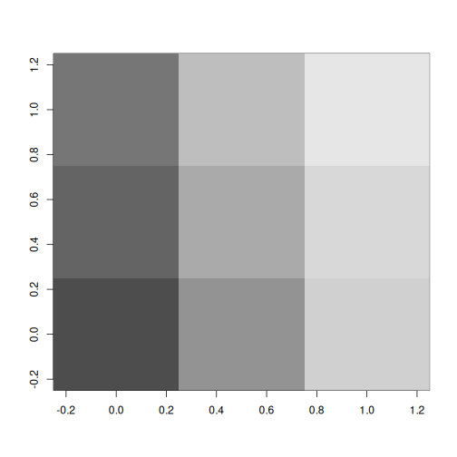
Why Coordinates Matter
When we displayed our image using:
R
image(
img,
col = gray.colors(256),
axes = FALSE
)
you may have noticed something surprising.
The pixel value at img[1,1] doesn’t appear in the
top-left corner of the plot.
Many learners expect it to appear in the upper-left corner.
Why?
The answer is that different fields use different coordinate systems.
Cartesian Coordinates
The base R function image() is derived from mathematical
plotting tools.
Mathematics typically uses Cartesian coordinates:
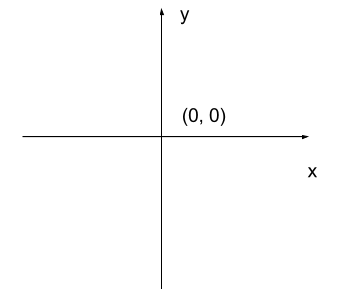
In this system, a plane is divided into 4 quadrants and the origin is located in the center.
As a result, image() displays matrices as mathematical
surfaces rather than as photographs,
and our image of the img object is plotted in quadrant I of a cartesian coordinate system.
Image Coordinates
BioImage-processing software uses image coordinates that differ from the cartesian coordinate system.
Examples include:
- Fiji/ImageJ
- napari
- Ilastik
- QuPath
- microscope acquisition software
In these systems the origin is located in the upper-left corner.
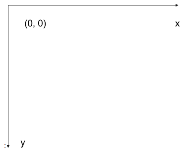
Rows increase as you move downward through the image.
Columns increase as you move to the right. The origin is in the upper-left corner.
Comparing the Two Systems
Suppose we create:
R
img2 <- matrix(
c(
1, 2, 3,
4, 5, 6,
7, 8, 9
),
nrow = 3,
byrow = TRUE
)
img2
OUTPUT
[,1] [,2] [,3]
[1,] 1 2 3
[2,] 4 5 6
[3,] 7 8 9Most image analysis users would interpret this matrix as:
1 2 3
4 5 6
7 8 9with the value 1 appearing in the upper-left corner.
However:
R
image(
1:nrow(img2),
1:ncol(img2),
img2,
col = gray.colors(9),
axes = FALSE
)
coords <- expand.grid(x = 1:nrow(img2), y = 1:ncol(img2))
text(coords$x, coords$y, labels = img2[as.matrix(coords)])
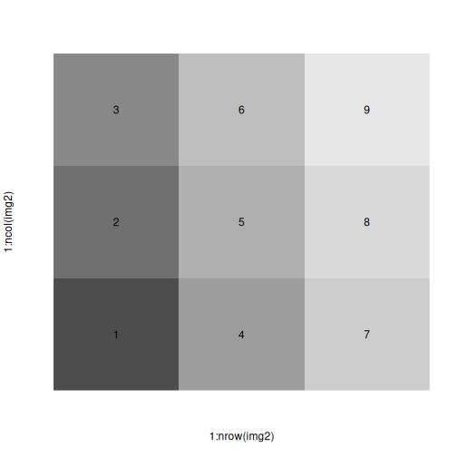
displays the value 1 in the lower-left corner.
The image has not changed. Only the coordinate system used for displaying it has changed.
If you have dark mode on, the image intensities will have been further changed by a dark mode filter that inverts the display colors before it renders them in HTML.
Challenge
Predict where the value
R
img[3,3]
will appear in the plot generated by:
R
image(img2)
Will it appear in the:
- Upper-left
- Upper-right
- Lower-left
- Lower-right
The correct answer is:
2. Upper-rightThe image() function interprets a matrix as a mathematical surface
rather than as a digital image. As a result, matrix rows and columns do
not map directly onto image x and y coordinates in the way most
microscopy software displays images. In addition, the vertical axis
increases upward, following Cartesian plotting conventions rather than
image-processing conventions. To find out more about the image function,
type ?image() in a cell and run it. You should get a
description of functions, its arguments and some examples.
A Common Source of Confusion
When working with image analysis software, always check which coordinate system is being used.
A segmentation algorithm may report coordinates in image space while a plotting function displays the same data using Cartesian coordinates.
Many bugs in image-analysis workflows arise from accidentally mixing coordinate systems.
Why We Are Keeping This Behaviour
You may wonder why we do not simply “fix” the orientation.
The reason is educational.
Throughout this lesson we want to emphasise that:
- images are numerical data
- image displays are visual representations of those data
- the same image can be displayed using different coordinate systems
Understanding this distinction will make later lessons on segmentation, measurements, and image metadata much easier.
Looking Ahead
In the next lesson we will begin working with real microscopy images using EBImage.
Image-analysis libraries generally display data in a way that is more familiar to microscopy users.
However, it is still important to understand what is happening underneath the display.
The image displayed is simply a visual representation of the matrix.
Pixels
A pixel is a picture element.
Pixels have:
- a location
- an intensity value
Pixels do not have a physical size until calibration metadata are applied.
Image Dimensions
Many microscopy datasets contain more than two dimensions.
Examples include:
X Y Zor:
X Y ChannelAdvanced microscopy data may contain:
X Y Z Channel TimeThis is often abbreviated:
XYZCTBit Depth
Bit depth determines the range of intensity values available.
| Bit Depth | Values |
|---|---|
| 8-bit | 0-255 |
| 12-bit | 0-4095 |
| 16-bit | 0-65535 |
Greater bit depth generally provides greater dynamic range and more accurate quantitative measurements.
Simulating Pixel Intensities
R
set.seed(123)
pixels <- runif(
10000,
min = 0,
max = 65535
)
pxl <- matrix(pixels, nrow = 100)
image(
pxl,
col = gray.colors(256),
axes = FALSE
)
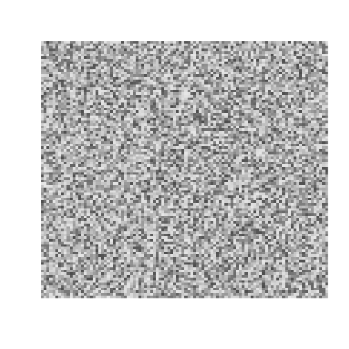
R
hist(
pixels,
breaks = 50,
main = "Pixel Intensity Histogram",
xlab = "Intensity"
)
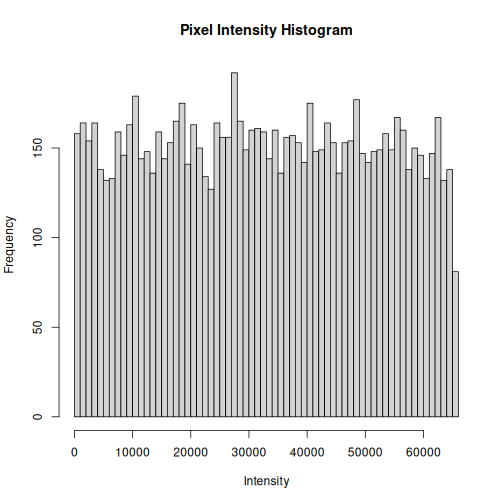
Histograms are one of the most useful diagnostic tools in bioimage analysis. We’ll spend time learning about historams in lesson 3.
They allow us to inspect:
- dynamic range
- saturation
- clipping
- image quality
Challenge
The photo-physical process of fluorescence generates image data that are derived from a Poisson distribution. Generate 10,000 intensity values from a poisson distribution with a \(\lambda\) of 128.
display an image and a histogram of the data
R
pixels_poisson <- rpois(
10000,
lambda = 128
)
pois_mat <- matrix(pixels_poisson, nrow = 100)
image(
pois_mat,
col = gray.colors(256),
axes = FALSE
)
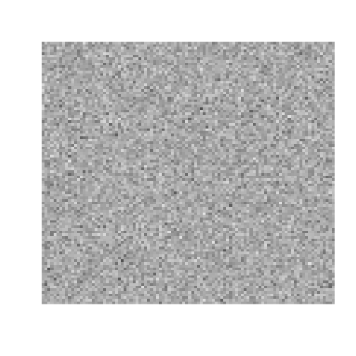
R
hist(
pixels_poisson,
breaks = 25
)
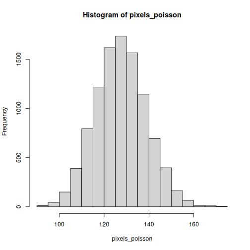
Metadata
Metadata are data describing how an image was acquired.
Examples include:
- microscope type
- objective lens
- exposure time
- detector gain
- laser power
- pixel size
Metadata Are Scientific Data
Without metadata it may be impossible to reproduce a microscopy experiment or make valid quantitative measurements.
Why Pixel Size Matters
Suppose a nucleus occupies:
5000 pixelsin two different images.
Image A:
Pixel size = 1 µmImage B:
Pixel size = 0.1 µmThe real-world size represented by those 5000 pixels is extremely different.
Pixel counts alone are not enough.
Practical Exercise
Generate a random image:
R
random_img <- matrix(
runif(10000),
nrow = 100
)
image(
random_img,
col = gray.colors(256),
axes = FALSE
)
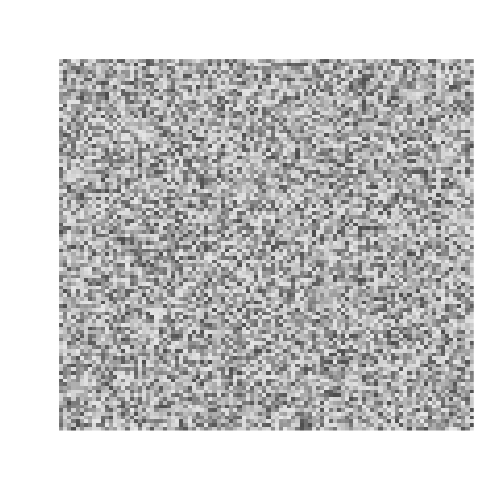
Calculate:
R
dim(random_img)
OUTPUT
[1] 100 100R
min(random_img)
OUTPUT
[1] 7.896405e-05R
max(random_img)
OUTPUT
[1] 0.999956R
mean(random_img)
OUTPUT
[1] 0.4967174Discussion
Why might two images look similar on screen but not be directly comparable for quantitative analysis?
Consider:
- exposure time
- detector gain
- pixel size
- display settings
Quiz
Challenge
Which statement is TRUE?
- Metadata are optional.
- Images are stored as numerical arrays.
- Pixels always represent physical units.
- Histograms only apply to photographs.
- Images are stored as numerical arrays.
Challenge
A 16-bit image can represent how many intensity values?
- 255
- 4096
- 65536
- Unlimited
- 65536
Key Points
- Digital images are numerical arrays.
- Pixels are the smallest units of an image.
- Image displays may use different coordinate systems from image-analysis software.
- Pixel values represent measured intensity.
- Bit depth determines the available intensity range.
- Histograms provide useful information about image quality.
- Metadata are essential for quantitative microscopy.
- Microscopy images should be treated as scientific datasets.
Content from Reading Bioimages
Last updated on 2026-08-18 | Edit this page
Estimated time: 70 minutes
Overview
Questions
- How are microscopy images stored on disk?
- What image file formats are commonly used in bioimage analysis?
- What is the difference between lossless and lossy compression?
- How can images be read into R?
Objectives
- Load images into R using EBImage.
- Compare common image file formats.
- Distinguish between lossless and lossy compression.
- Explain why TIFF and OME-TIFF are preferred for quantitative image analysis.
- Inspect the dimensions and pixel values of image data.
Introduction
In the previous lesson we learned that digital images are numerical arrays.
Those arrays must be stored somewhere. When an image is saved to disk, the pixel data are stored inside an image file format.
Many image file formats exist, but not all are equally suitable for scientific image analysis.
Choosing an inappropriate image format can permanently alter image data and affect quantitative measurements.
In this lesson we will learn how image files are stored, how to read them into R, and how image formats can influence downstream analysis.
Common Image File Formats
You may already be familiar with several image file formats.
| Format | Typical Use | Quantitative Analysis |
|---|---|---|
| JPEG (.jpg) | Photographs | Usually not recommended |
| PNG (.png) | Graphics and screenshots | Often acceptable |
| TIFF (.tif) | Scientific imaging | Recommended |
| OME-TIFF (.ome.tif) | Microscopy images and metadata | Preferred |
Some formats prioritise small file size.
Others prioritise preservation of image information.
For scientific image analysis, preserving image information is usually more important than reducing file size.
Scientific Images Are Measurements
Microscopy images are not simply pictures.
Each pixel represents a measurement made by a detector.
Altering pixel values can alter the outcome of quantitative analyses.
Compression
Many image formats use compression to reduce file size.
Compression can be divided into two broad categories:
Lossless Compression
Lossless compression reduces file size without changing pixel values.
Original image -> Compressed image -> Recovered image
The Pixel values are unchangedCommon examples include:
- PNG
- TIFF with LZW compression
- OME-TIFF
Lossy Compression
Lossy compression achieves greater file size reductions by modifying image data.
Original image -> Compressed image -> Recovered image
The Pixel values are alteredThe most common example is:
- JPEG
JPEG compression is excellent for photographs intended for visual inspection.
It is often inappropriate for quantitative microscopy.
Reading Images with EBImage
The EBImage package provides functions for reading and displaying images. EBImage provides general purpose functionality for image processing and analysis. In the context of (high-throughput) microscopy-based cellular assays, EBImage offers tools to segment cells and extract quantitative cellular metrics.
The EBImage library was installed as part of the conda environment that you initially setup.
R
library(EBImage)
packageVersion("EBImage")
OUTPUT
[1] '4.54.0'Read (assign) a TIFF image to an R object using the
readImage() function provided by EBImage.
R
img <- readImage(
"data/03-reading-bioimages/cells-original.tif"
)
WARNING
Warning in readTIFF(x, all = all, ...): TIFFReadDirectory: Unknown field with
tag 50838 (0xc696) encounteredWARNING
Warning in readTIFF(x, all = all, ...): TIFFReadDirectory: Unknown field with
tag 50839 (0xc697) encounteredand Display the image:
R
display(img)

The image is now stored in R as a numerical array.
Inspecting Image Dimensions
EBImage uses the Image class to store and process
images. Images are stored as multi-dimensional arrays containing the
pixel intensities and a colorMode that determines whether
the underlying image data are Color or
Grayscale. In either mode, the first two dimensions of the
underlying array are understood to be the X & Y spatial dimensions
of the image. In the Grayscale mode the remaining
dimensions contain other image frames (e.g. Channels, Time, Z,
etc.).
In the Color mode, the third dimension contains color
channels of the image (usually R,G,B), while higher dimensions contain
image frames that represent other dimensions. We can examine the
dimensions of an image.
R
dim(img)
OUTPUT
[1] 512 512The output depends on the image.
Examples include:
512 x 512for a grayscale image and
512 x 512 x 3for a three-channel image.
We can also inspect pixel values.
R
range(img)
OUTPUT
[1] 0 1R
summary(as.vector(img))
OUTPUT
Min. 1st Qu. Median Mean 3rd Qu. Max.
0.000000 0.000000 0.007843 0.046123 0.023529 1.000000 The exact values depend on the image and its bit depth.
You may have noticed somethig strange about the values that are returned when asking for the image’s range.
Although microscope detectors typically record pixel intensities as integers (for example values between 0 and 255 for 8-bit images or 0 and 65,535 for 16-bit images), image analysis libraries such as EBImage often convert these values to floating-point numbers between 0 and 1 when images are loaded into memory. This process is known as normalisation. For example, in a 16-bit image, a pixel value of 32,768 would be represented internally as approximately 0.5, in a 8-bit image, a pixel value of 0.5 in the converted image would correspond to ~128. Working with normalised floating-point values provides a consistent representation regardless of the original bit-depth of the image and simplifies many image-processing operations. A value of 0 always represents the minimum intensity in the image’s dynamic range, while a value of 1 represents the maximum intensity. Importantly, this conversion preserves the relative intensity relationships between pixels, ensuring that quantitative measurements remain valid while providing a common numerical scale for analysis.
A Comparison of File Formats
Suppose the same image data has been saved in three different file formats:
cells-original.tif
cells-lossless.png
cells-lossy.jpgLoad each file.
R
img_tif <- img
img_png <- readImage(
"data/03-reading-bioimages/cells-lossless.png"
)
img_jpg <- readImage(
"data/03-reading-bioimages/cells-lossy.jpg"
)
Display the images.
R
display(img_tif)

R
display(img_png)

R
display(img_jpg)
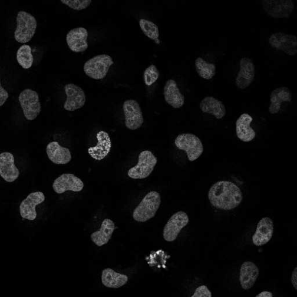
At first glance they may appear very similar.
However, quantitative analysis requires us to look beyond visual appearance.
Comparing Pixel Values
Compare the TIFF and PNG versions. We can use base R’s
all() function to ask whether all values are TRUE in an R
vector or array.
R
all(img_tif == img_png)
OUTPUT
[1] TRUEBecause PNG uses lossless compression, pixel values may be preserved exactly. Depending on implementation, conversion to png may result in a change from a grayscale to an rgb color image. In this case, the images would be different.
Now compare TIFF and JPEG.
R
all(img_tif == img_jpg)
OUTPUT
[1] FALSEJPEG compression modifies pixel values.
As a result, exact equality is unlikely.
Challenge
Why might two images appear visually identical but contain different pixel values?
Human vision is relatively insensitive to many subtle pixel-level changes.
Compression algorithms such as JPEG deliberately remove information that is unlikely to be noticed visually.
Quantitative image analysis, however, operates directly on pixel values and can be affected by these changes.
Visualising Compression Differences
We can calculate the difference between two images.
R
difference <- abs(
img_tif - img_jpg
)
Display the difference image.
R
display(
normalize(difference)
)
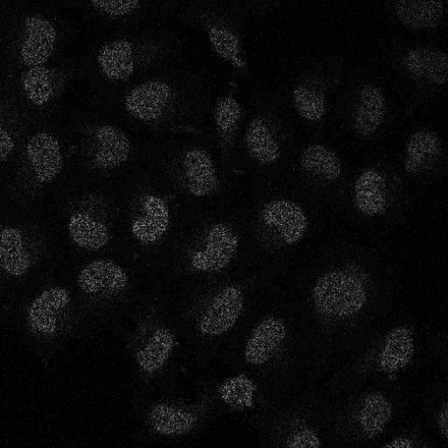
Although the JPEG image may look very similar to the original, the difference image reveals where pixel values have been modified.
This demonstrates why lossy compression can be problematic for scientific analysis.
Which Format Should I Use?
For bioimage analysis, TIFF is often a good choice because:
- it supports high bit depth images
- it supports lossless compression
- it is widely supported
Many microscopy workflows now use OME-TIFF.
OME-TIFF combines:
Image pixels + Image metadatawithin a single standardised file.
Metadata may include:
- pixel size
- objective lens
- channel names
- microscope settings
- acquisition parameters
We will explore metadata in the next lesson.
Challenge
A collaborator emails you a JPEG image exported from PowerPoint and asks you to measure fluorescence intensity.
What concerns might you have?
The JPEG image may have been compressed using a lossy algorithm.
Pixel values may have been altered during export.
Quantitative measurements derived from the JPEG image may not reflect the original microscopy data.
Ideally the original microscopy file, TIFF, or OME-TIFF should be used instead.
Challenge
If two images have the same image histogram, does that mean the images are identical?
The R Code below displays the img Image, shuffles its
values and assigns this new matrix to another Image,
another_img, then displays another_img and
calculates both of their histograms. Note that althrough the histograms
are identical, the images are completely different.
R
display(img)
R
another_img <- Image(matrix(sample(img), nrow = nrow(img), ncol = ncol(img)))
display(another_img)
R
graphics::hist(img, breaks = 50)
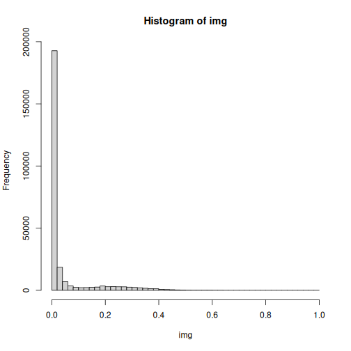
R
graphics::hist(another_img, breaks = 50)
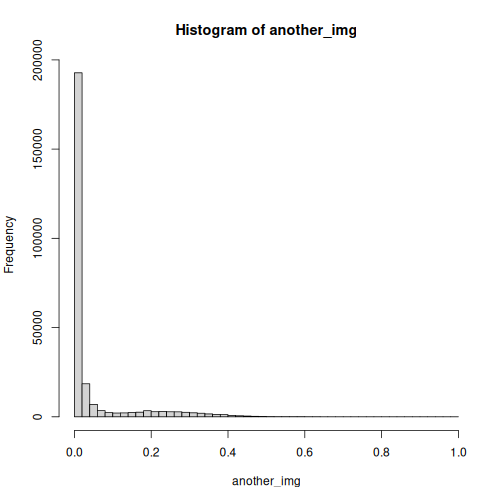
Looking Ahead
We can now read image files into R and understand some of the strengths and limitations of common image formats.
In the next lesson we will examine image metadata and learn why information such as pixel size, magnification, and acquisition settings are essential for quantitative microscopy.
Key Points
- Images are stored using a variety of file formats.
- TIFF and OME-TIFF are commonly used in scientific imaging.
- PNG uses lossless compression.
- JPEG uses lossy compression and changes pixel values.
- Quantitative image analysis depends on preserving image information.
- EBImage can read and display microscopy images.
- OME-TIFF stores both image data and microscopy metadata.
Content from Microscopy Metadata
Last updated on 2026-08-18 | Edit this page
Estimated time: 65 minutes
Overview
Questions
- What is metadata?
- Why is metadata important in microscopy?
- How do pixel measurements relate to physical measurements?
- What is OME-TIFF?
- What is Bio-Formats?
- What information is retained when images are loaded into EBImage?
Objectives
- Define metadata and explain its importance.
- Identify common microscopy metadata fields.
- Explain the relationship between pixels and physical units.
- Describe the purpose of OME-TIFF.
- Describe the role of Bio-Formats in microscopy image analysis.
- Compare Image and AnnotatedImage concepts.
- Recognise why metadata preservation is essential for reproducible research.
Introduction
In the previous lesson we learned how microscopy images can be stored and read into R.
However, image pixels alone are rarely sufficient for scientific analysis.
To interpret image data correctly we must also understand how those images were acquired.
This information is known as metadata.
Metadata are often defined as:
Data about data or
Data that Describe Data
In microscopy, metadata can be just as important as the pixel values themselves.
What Is Metadata?
Consider a photograph taken with a smartphone.
The image contains pixels with intensity values, but the file may also contain:
- camera model
- date and time
- GPS location
- exposure settings
These are examples of metadata. Photos use a metadata model known as EXIF.
Microscopy images are similar.
The image contains the measured signal, while metadata describe how those measurements were acquired.
Challenge
Which of the following are examples of metadata?
- Pixel intensity values
- Objective magnification
- Detector exposure time
- Channel names
The correct answers are:
2. Objective magnification
3. Detector exposure time
4. Channel namesPixel intensity values are image data, not metadata.
Common Microscopy Metadata
Modern imaging experiments generate large amounts of metadata.
To improve reproducibility and data sharing, the bioimaging community developed REMBI (Recommended Metadata for Biological Images), which provides guidance on the information that should accompany image datasets.
REMBI covers many different imaging modalities and experimental workflows. For our purposes, it is useful to think about microscopy metadata as belonging to several broad categories.
Sample Metadata
Information describing what was imaged.
Examples include:
- organism
- tissue or cell type
- experimental condition
- fluorescent labels
- staining protocols
- sample preparation methods
Image Acquisition Metadata
Information describing how the image was acquired.
Examples include:
- microscope type
- objective magnification
- numerical aperture
- detector type
- laser wavelengths
- exposure times
- detector gain
Image Structure Metadata
Information describing the structure of the image data.
Examples include:
- image dimensions
- number of channels
- number of z-planes
- number of timepoints
- bit-depth
Spatial Calibration Metadata
Information required to convert pixels into physical measurements.
Examples include:
- pixel size
- physical units
Provenance Metadata
Information describing the history of the dataset.
Examples include:
- acquisition date
- operator
- analysis software
- processing steps
- dataset identifiers
REMBI and Reproducibility
REMBI promotes the collection and sharing of metadata needed to understand, reproduce, and reuse biological imaging experiments.
In practice, researchers may record more or less metadata than listed here. These examples represent some of the most commonly encountered metadata during image analysis workflows.
Metadata Enable Reproducibility
Without metadata it can be impossible to determine exactly how an image was acquired.
Good metadata are essential for reproducible scientific image analysis.
As an example, pixels are not physical units. We need to know both the number
of pixels a feature occupies as well as the physical area of each pixel in order
to calculate the feature’s area.
Why Metadata Matter
Consider two images.
OME-TIFF: Images Plus Metadata
The Open Microscopy Environment (OME) developed OME-TIFF to provide a standardised way of storing microscopy images together with the metadata needed to interpret them.
An OME-TIFF file contains:
Image Pixels + Metadata
Metadata stored within an OME-TIFF file may include:
- pixel sizes
- voxel dimensions
- channel names
- objective information
- exposure times
- detector settings
- acquisition dates
Unlike formats such as JPEG, OME-TIFF was designed specifically for scientific imaging workflows.
Why OME-TIFF Matters
OME-TIFF stores both image data and metadata in a standard format that can be shared between software platforms.
Introducing Bio-Formats
Microscopy images are produced by many different microscope manufacturers.
Examples include:
- Zeiss
.czi - Nikon
.nd2 - Leica
.lif - Olympus
.vsi
Each format stores image data and metadata slightly differently.
The Open Microscopy Environment developed Bio-Formats, an open-source software library capable of reading a large number of microscopy file formats.
Bio-Formats provides a common interface for accessing both image data and metadata.
Many popular software tools use Bio-Formats internally, including:
- Fiji
- OMERO
- QuPath
- RBioFormats
Why Bio-Formats Matters
Bio-Formats allows scientists to access image data and metadata from many different microscope systems without relying on vendor-specific software.
RBioFormats
The R package RBioFormats provides access to Bio-Formats from within R.
Unlike EBImage, which focuses primarily on the image data for image processing and analysis, RBioFormats was designed to provide access to microscopy image metadata as well as image data.
Throughout this lesson we will continue to use EBImage because it provides a simple and accessible environment for learning image-analysis concepts.
Image versus AnnotatedImage
Images can be represented in different ways by different software packages.
When an image is loaded using EBImage in R it is represented as an
Image object.
Image
colorMode : Color
storage.mode : double
dim : 2560 2560 3 2
frames.total : 6
frames.render: 2
imageData(object)[1:5,1:6,1,1]
[,1] [,2] [,3] [,4] [,5]
[1,] 0.032379644 0.022171359 0.0080872816 0.0056305791 0.0065613794
[2,] 0.021667811 0.014892805 0.0055695430 0.0043640803 0.0046997787
[3,] 0.007522698 0.005325399 0.0021515221 0.0019684138 0.0017547875
[4,] 0.002502480 0.001998932 0.0010833906 0.0005188067 0.0003814755
[5,] 0.002090486 0.001586938 0.0007934691 0.0003204395 0.0001525902
[,6]
[1,] 0.0055848020
[2,] 0.0036926833
[3,] 0.0012359808
[4,] 0.0002288853
[5,] 0.0001678492Conceptually:
Image
|
└── Pixel ArrayThe object primarily stores image data.
In contrast, when an image is loaded using RBioFormats in R it is
represented as an AnnotatedImage object:
AnnotatedImage
colorMode : Color
storage.mode : double
dim : 2560 2560 2
dimorder : x y c
frames.total : 2
frames.render: 1
imageData(object)[1:5,1:6,1]
[,1] [,2] [,3] [,4] [,5]
[1,] 0.032379644 0.022171359 0.0080872816 0.0056305791 0.0065613794
[2,] 0.021667811 0.014892805 0.0055695430 0.0043640803 0.0046997787
[3,] 0.007522698 0.005325399 0.0021515221 0.0019684138 0.0017547875
[4,] 0.002502480 0.001998932 0.0010833906 0.0005188067 0.0003814755
[5,] 0.002090486 0.001586938 0.0007934691 0.0003204395 0.0001525902
[,6]
[1,] 0.0055848020
[2,] 0.0036926833
[3,] 0.0012359808
[4,] 0.0002288853
[5,] 0.0001678492
metadata
$ coreMetadata :List of 18
$ globalMetadata:List of 502Conceptually:
AnnotatedImage
|
├── Pixel Array
└── Metadata
|
├── Pixel Size
├── Channel Names
├── Acquisition Settings
└── Instrument InformationAnnotatedImage objects preserve the relationship between
image data and metadata.
Image Data and Metadata
A useful way to think about microscopy files is:
Image Data + Metadata = Biological MeaningBoth components are required for quantitative image analysis.
What Happens When We Read an OME-TIFF with EBImage?
Load an OME-TIFF file using EBImage.
R
library(EBImage)
img <- readImage(
"data/04-microscopy-metadata/Actin.ome.tif"
)
WARNING
Warning in readTIFF(x, all = all, ...): TIFFReadDirectory: Incorrect count for
"ColorMap"; tag ignoredInterrogate & display the object and some of its parameters:
R
img
OUTPUT
Image
colorMode : Grayscale
storage.mode : double
dim : 2560 2560
frames.total : 1
frames.render: 1
imageData(object)[1:5,1:6]
[,1] [,2] [,3] [,4] [,5]
[1,] 0.032379644 0.022171359 0.0080872816 0.0056305791 0.0065613794
[2,] 0.021667811 0.014892805 0.0055695430 0.0043640803 0.0046997787
[3,] 0.007522698 0.005325399 0.0021515221 0.0019684138 0.0017547875
[4,] 0.002502480 0.001998932 0.0010833906 0.0005188067 0.0003814755
[5,] 0.002090486 0.001586938 0.0007934691 0.0003204395 0.0001525902
[,6]
[1,] 0.0055848020
[2,] 0.0036926833
[3,] 0.0012359808
[4,] 0.0002288853
[5,] 0.0001678492R
dim(img)
OUTPUT
[1] 2560 2560R
range(img)
OUTPUT
[1] 0 1R
display(img)

The image can be analysed successfully.
However, the resulting object primarily represents only the image pixel data.
The RBioFromats library provides an equivalent function
to the EBImage readImage() function:
read.image().
We don’t use it here due to RBioFormats dependence on Java and the resulting headaches this can cause. I have included it in the environment file used when you created your conda environment. Provided you have a system wide java available, the following code should work.
Try it to see if it works in your Jupyter environment:
R
library(RBioFormats)
OUTPUT
BioFormats library version 7.3.0R
bio_img <- read.image(
"data/04-microscopy-metadata/Actin.ome.tif"
)
bio_img
OUTPUT
AnnotatedImage
colorMode : Grayscale
storage.mode : double
dim : 2560 2560
dimorder : x y
frames.total : 1
frames.render: 1
imageData(object)[1:5,1:6]
y
x [,1] [,2] [,3] [,4] [,5]
[1,] 0.032379644 0.022171359 0.0080872816 0.0056305791 0.0065613794
[2,] 0.021667811 0.014892805 0.0055695430 0.0043640803 0.0046997787
[3,] 0.007522698 0.005325399 0.0021515221 0.0019684138 0.0017547875
[4,] 0.002502480 0.001998932 0.0010833906 0.0005188067 0.0003814755
[5,] 0.002090486 0.001586938 0.0007934691 0.0003204395 0.0001525902
y
x [,6]
[1,] 0.0055848020
[2,] 0.0036926833
[3,] 0.0012359808
[4,] 0.0002288853
[5,] 0.0001678492
metadata
$ coreMetadata:List of 18R
dim(bio_img)
OUTPUT
[1] 2560 2560R
range(bio_img)
OUTPUT
[1] 0 1R
display(bio_img)
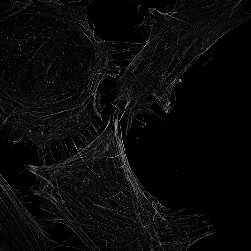
Image Data and Metadata Become Separated
It can be helpful to think about the process as:
OME-TIFF
|
├── Image Pixels
└── Metadata↓
EBImage Image Object
|
└── Pixel ArrayThe image data are loaded into memory and become available for analysis.
The metadata remain stored in the original file but are not typically
exposed through the EBImage Image object itself. Metadata
are, however, available in the AnnotatedImage object
created when you load an image using the
RBioFormats read.image() function.
Challenge
An OME-TIFF file contains:
- image pixels
- pixel size information
- channel names
- microscope settings
It is loaded using:
R
img <- readImage("cells.ome.tif")
Which information is guaranteed to be available through the resulting object?
- Pixel data
- Objective information
- Exposure time
- Channel metadata
Would it be different if we used the following command instead?
R
img <- read.image("cells.ome.tif")
1. Pixel dataEBImage (which provides the readImage() function)
primarily works with image pixel data.
Additional metadata stored in the OME-TIFF file may not be directly available through the resulting Image object.
If the image object is an AnnotatedImage because you
loaded it with the read.image() function, then all of the pixel array
information and metadata would be available in the image object.
Losing Metadata
Metadata can be lost when images are:
- exported to inappropriate formats
- copied into presentation software
- converted between file formats
- separated from their original acquisition files
Consider the workflow:
Microscope Image -> OME-TIFF -> PNGThe PNG file may still contain a viewable image.
However, important metadata may no longer be available.
The image remains.
Critical scientific context may be lost.
Challenge
Why might exporting a microscopy image to PNG cause problems for future analysis?
PNG files often lose important microscopy metadata.
Information such as calibration, acquisition settings, channel names, and instrument information may no longer be preserved.
This makes reproducibility and quantitative analysis more difficult.
Looking Ahead
Metadata provide the information needed to interpret biological images correctly.
Throughout the remainder of this course we will repeatedly combine:
Image Data + Metadatato obtain meaningful biological measurements.
In future lessons we will explore how image display, visualisation, and image processing can alter our perception of an image while leaving the underlying pixel data unchanged.
Key Points
- Metadata describe how an image was acquired.
- Pixel measurements cannot be interpreted without calibration information.
- Pixel size enables conversion from pixels to physical units.
- OME-TIFF stores both image data and microscopy metadata.
- Bio-Formats provides a common interface for reading microscopy image formats.
- RBioFormats provides access to Bio-Formats from within R.
- EBImage primarily works with image pixel data.
- Image and AnnotatedImage objects have different goals.
- Metadata are essential for reproducible microscopy.
- Exporting images to inappropriate formats can result in metadata loss.
Content from Visualising Bioimages
Last updated on 2026-08-18 | Edit this page
Estimated time: 75 minutes
Overview
Questions
- How are microscopy images displayed?
- What is the relationship between image data and image display?
- How can image contrast be adjusted?
- What do image histograms tell us about pixel intensities?
- What are lookup tables (LUTs)?
Objectives
- Display images using EBImage.
- Explain the difference between image data and image display.
- Generate and interpret image histograms.
- Apply contrast stretching to improve image visualisation.
- Explain the purpose of lookup tables.
- Recognise when display changes do and do not alter image data.
Introduction
Microscopy images are ultimately collections of numerical measurements.
However, scientists rarely inspect raw pixel values directly.
Instead, we visualise image data by mapping pixel values to brightness and colour on a computer screen.
A crucial concept in bioimage analysis is:
Image Data ≠ Image DisplayThe same image data can be displayed in many different ways without changing a single pixel value.
In this lesson we will explore how images are visualised and how display choices affect our interpretation of microscopy data.
Reading an Image
Load the EBImage package.
R
library(EBImage)
Read an image.
R
img <- readImage(
"data/05-visualising-bioimages/dimMito.ome.tif"
)
WARNING
Warning in readTIFF(x, all = all, ...): TIFFReadDirectory: Incorrect count for
"ColorMap"; tag ignoredDisplay the image.
R
display(img)
This image is represented internally as a numerical array.
Let’s inspect its dimensions.
R
dim(img)
OUTPUT
[1] 2560 2560We can also examine the range of pixel values.
R
range(img)
OUTPUT
[1] 0.000000 0.686656A Reminder About Pixel Values
Earlier we learned that microscope detectors often record pixel intensities as integers such as 8-bit values (0-255) or 16-bit values (0-65,535).
When images are loaded into EBImage, these values are typically normalised to floating-point values between 0 and 1. This provides a consistent numerical representation for image processing and visualisation, regardless of the original bit-depth of the image.
These pixel values form the underlying image data.
Images Are Data
Each pixel contains a numerical value.
We can calculate simple summary statistics.
R
summary(as.vector(img))
OUTPUT
Min. 1st Qu. Median Mean 3rd Qu. Max.
0.0000000 0.0003204 0.0010529 0.0139743 0.0029145 0.6866560 These numbers summarise the underlying pixel intensity values, regardless of how the image is displayed on screen.
Challenge
What information is lost if we only look at the displayed image and ignore the pixel values?
The displayed image shows a visual representation of the data.
The underlying numerical pixel values, which are used for quantitative image analysis, are not directly visible.
Measurements, segmentation, and image processing are performed on pixel values, not the displayed image.
Why Some Images Look Dark
Many microscopy images contain useful information across a relatively narrow range of intensities. The mitochondrial image (dimMito.ome.tif) you displayed earlier is a good example. In our mitochondrial image, the data range from 0 to 0.68
0.00 ---------------- 0.68A computer display often expects values spanning:
0.00 ---------------- 1.00As a result, many scientific images initially appear dark or low contrast. Our mitochondrial image only uses 2/3 of the total dynamic range that the screen can show.
Display software sometimes compensates for this by adjusting how pixel values are mapped to screen brightness. Usually without explicitly mentioning how the values in the image are mapped to brightness on the screen. But sometimes not. Jupyter Lab does not.
Histograms
Another way to visualise the same data is to look at the distribution of the data. Histograms show us the pixel intensity distributions within an image, leaving out any spatial information.
Create a histogram of the image pixels.
R
hist(
as.vector(img),
main = "Pixel Intensity Histogram",
xlab = "Pixel Intensity"
)
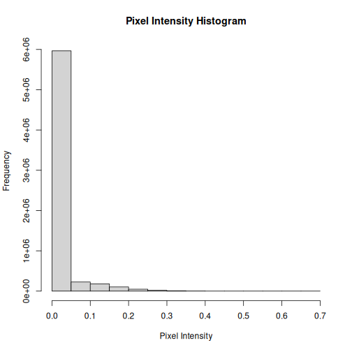
The histogram shows:
- the range of pixel values
- how frequently each value occurs
- whether intensities occupy a small or large fraction of the available range
Histograms Describe Data
A histogram provides information about the image data itself.
Unlike image display settings, histograms are independent of the brightness/contrast settings used to visualise the image. The following image briefly describes how an image histogram is created from the underlying data.

Contrast Stretching
Images often become easier to inspect when their contrast is adjusted.
Common approaches include contrast stretching or histogram equalization.
EBImage provides the normalize() and
equalize() functions.
Important — This does NOT change the underlying pixel values in most software. In R, we could change the pixel values by assigning the new object to the old object. Therefore, a common way to do this is to normalize the original image data and assign this to a new object. You rarely want to change your raw data!
R
img_stretched <- normalize(img)
img_equalized <- equalize(img)
Display the enhanced images.
R
display(img_stretched)
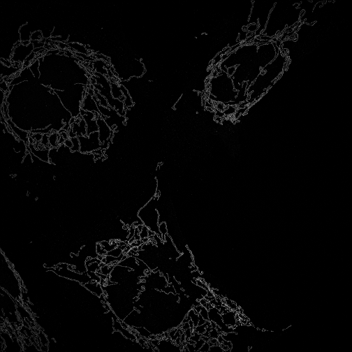
R
display(img_equalized)
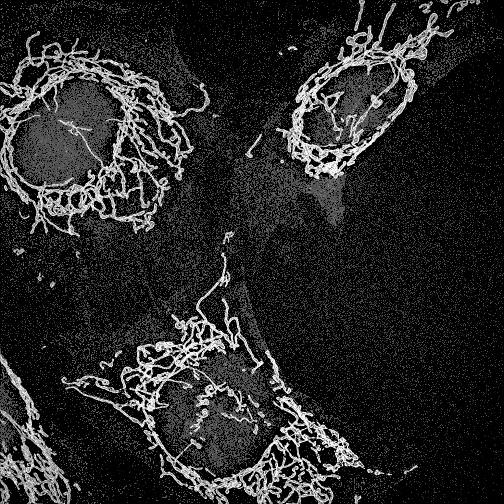
Compare the intensity ranges.
Original Image:
R
range(img)
OUTPUT
[1] 0.000000 0.686656Streched Image:
R
range(img_stretched)
OUTPUT
[1] 0 1Equalized Image:
R
range(img_equalized)
OUTPUT
[1] 0 1The image appearance changes dramatically, but the biological structures remain the same.
Has the Data Changed?
Let’s compare the original and stretched images.
R
par(mfrow = c(1, 3))
hist(
as.vector(img),
main = "Original",
xlab = "Intensity"
)
hist(
as.vector(img_stretched),
main = "Normalised",
xlab = "Intensity"
)
hist(
as.vector(img_equalized),
main = "Equalized",
xlab = "Intensity"
)
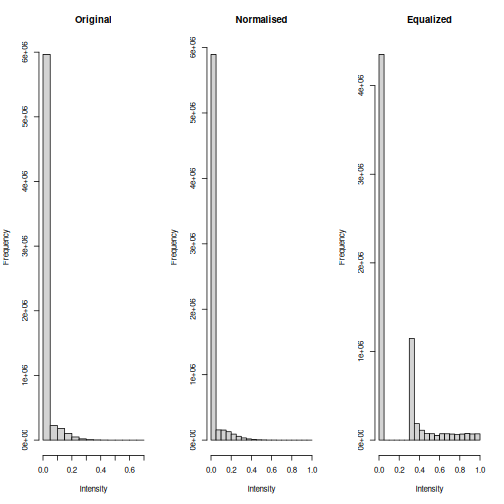
R
par(mfrow = c(1, 1))
Contrast enhancement changes how intensities are distributed across the display range.
Importantly, it does not create new biological structures.
Challenge
The normalised/equalised image appears much clearer(?) than the original image.
Has new biological information been created?
No. but new biological insights may be gained with new visualisations.
Contrast stretching or histogram equalisation changes how the image is displayed.
It can make structures easier to see, but it does not create new biological features.
The information was already present in the original image.
Image Data versus Image Display
It is useful to think about image visualisation as a mapping process.
Pixel Values in the image -> Display Mapping -> Visible Image on the screenDifferent display mappings can produce very different visual appearances while using exactly the same image data.
Lookup Tables
A lookup table (LUT) defines how pixel intensities are displayed. It is the mapping function alluded to above that takes in a pixel intensity value and produces a display value.
For example:
Low Intensity → Black ....... High Intensity → White
produces a grayscale image.
You can imagine it as a table with two columns: one with the pixel value & one with the resulting display value.
| Image Value | Display Value |
|---|---|
| 0 | 0 |
| 1 | 1 |
| … | … |
| 254 | 254 |
| 255 | 255 |
Other LUTs may map intensities to:
- green
- magenta
- yellow
- red
- blue
or many other colour schemes. We can even use colour to indicate intensity rather than wavelength by mapping different intensity values to different colours.
A LUT changes appearance, not pixel values.
Challenge
Suppose the same fluorescence image is displayed using:
- grayscale
- green
- magenta
Which display contains the largest fluorescence intensity values?
All three displays contain exactly the same intensity values.
Only the mapping between intensity and colour has changed.
LUTs affect visual appearance but do not alter the image data.
Histograms Before and After Visualisation Changes
As we saw earlier, we can alter the image display by altering the display values in the histogram.
In the case above, where we’ve displayed the image using a different LUT or contrast setting.
The image appearance may change dramatically.
However, the histogram remains the same unless the underlying pixel values are modified.
This distinction is extremely important throughout bioimage analysis.
A Note on Figure Preparation
When preparing figures for presentations or publications, investigators often adjust:
- brightness
- contrast
- colour maps
These changes can improve interpretation and communication.
However, display adjustments should:
- be applied consistently
- preserve the underlying scientific information
- avoid obscuring or exaggerating image features
Display Changes and Analysis
Quantitative image analysis should be performed on image data rather than the appearance of a displayed image.
Always distinguish between modifications that affect visualisation and those that alter pixel values.
Looking Ahead
In this lesson we changed how images were displayed.
The underlying pixel values remained unchanged.
In the next lesson we will begin performing image processing operations that modify image data directly.
These operations will alter the image itself rather than simply changing how it appears on screen.
Key Points
- Microscopy images are numerical data.
- The same image data can be displayed in many different ways.
- Histograms summarise the distribution of pixel intensities.
- Contrast enhancement improves visibility without creating new biological information.
- Lookup tables change appearance but not intensity values.
- Image data and image display are distinct concepts.
- Quantitative image analysis relies on pixel values rather than image appearance.
Content from Multi-channel Images and Colour
Last updated on 2026-08-18 | Edit this page
Estimated time: 75 minutes
Overview
Questions
- What is the difference between grayscale and colour images?
- How does EBImage represent colour images?
- What is the difference between RGB images and fluorescence microscopy images?
- What are channels?
- What is pseudocolouring?
Objectives
- Distinguish between grayscale and colour images.
- Describe RGB image representation.
- Use EBImage colour modes.
- Explain the difference between RGB colour channels and fluorescence channels.
- Explain pseudocolouring.
- Create colour composite images.
Introduction
In the previous lesson we learned that the same image data can be displayed in many different ways.
We used lookup tables (LUTs) to assign colours to grayscale images without changing the underlying pixel values.
This raises an important question:
Where do the colours come from?To answer this question we must first understand the difference between colour images and multi-channel microscopy images.
Although they are often displayed similarly, they represent fundamentally different kinds of data.
Grayscale Images
Most microscopy images begin as grayscale images. Detectors on most advanced acquisition systems only detect photons, not their wavelengths. Load an example image from EBImage.
R
library(EBImage)
img <- readImage(
system.file("images", "nuclei.tif", package = "EBImage"))
#Select a single frame for demonstration purposes.
img <- img[,,1]
Display the image.
R
display(img)

Determine its colour mode. EBImage has two color modes. Mode 0 is
Grayscale and Mode 2 is Color. You can find
the colormode with the colorMode() function or by typing
the name of the image object and running the cell to see the object’s
information. You can also use the base R function
str().
R
colorMode(img)
OUTPUT
[1] 0R
img
OUTPUT
Image
colorMode : Grayscale
storage.mode : double
dim : 510 510
frames.total : 1
frames.render: 1
imageData(object)[1:5,1:6]
[,1] [,2] [,3] [,4] [,5] [,6]
[1,] 0.06274510 0.07450980 0.07058824 0.08235294 0.10588235 0.09803922
[2,] 0.06274510 0.05882353 0.07843137 0.09019608 0.09019608 0.10588235
[3,] 0.06666667 0.06666667 0.08235294 0.07843137 0.09411765 0.09411765
[4,] 0.06666667 0.06666667 0.07058824 0.08627451 0.08627451 0.09803922
[5,] 0.05882353 0.06666667 0.07058824 0.08235294 0.09411765 0.10588235R
str(img)
OUTPUT
Formal class 'Image' [package "EBImage"] with 2 slots
..@ .Data : num [1:510, 1:510] 0.0627 0.0627 0.0667 0.0667 0.0588 ...
.. ..- attr(*, "dimnames")=List of 2
.. .. ..$ : NULL
.. .. ..$ : NULL
..@ colormode: int 0
..$ dim : int [1:2] 510 510
..$ dimnames:List of 2
.. ..$ : NULL
.. ..$ : NULLA grayscale image stores a single intensity value for every pixel.
Each pixel contains one numerical measurement.
Colour Models
Before discussing RGB images, it is useful to understand that there are different ways of creating colour.
Two common colour models are:
Additive Colour&
Subtractive ColourAdditive Colour
Additive colour is used by devices that emit light, such as:
- computer monitors
- televisions
- mobile phones
- projectors
- fluorescence probes
The additive colour model uses:
Red
Green
Bluelight sources.
Colours are created by adding different amounts of red, green, and blue light together.
For example:
Red + Green = Yellow
Red + Blue = Magenta
Green + Blue = Cyan
Red + Green + Blue = WhiteThe more light that is added, the brighter the resulting colour becomes.
This is why RGB is known as an additive colour model.
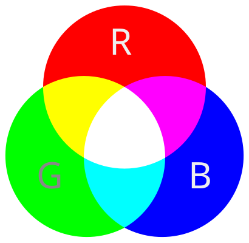
Subtractive Colour
Subtractive colour is used by materials that reflect light rather than emit it, such as:
- printed photographs
- books
- magazines
- posters
The subtractive colour model uses:
Cyan
Magenta
Yellowpigments or inks.
Instead of adding light, these colours work by absorbing (subtracting) different wavelengths from white light.
For example:
Cyan + Magenta = Blue
Cyan + Yellow = Green
Magenta + Yellow = RedCombining all colours produces a very dark colour or black.
Because colours are created by removing light, this is known as a subtractive colour model.
Why RGB Matters for Image Analysis
Microscopy images are usually viewed on computer screens, which use the additive RGB colour model.
As a result, colour images in software such as EBImage are typically represented using three channels:
Red
Green
BlueThese channels control the brightness of the red, green, and blue elements of the display and together produce the colours that we see on screen.
Creating an RGB Image
We can create an RGB image by combining three grayscale images.
R
rgb_img <- rgbImage(
red = img,
green = img,
blue = img
)
Display the result.
R
display(rgb_img)
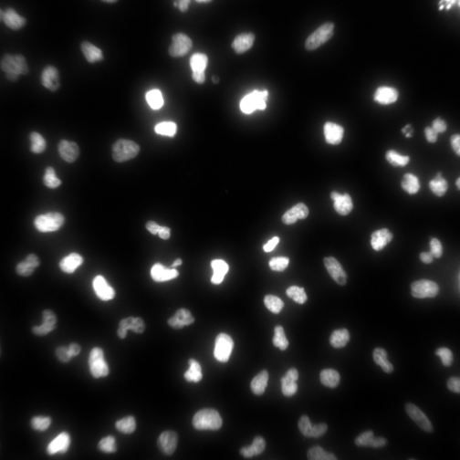
Determine its colour mode.
R
colorMode(rgb_img)
OUTPUT
[1] 2R
# or `rgb_img``or `str(rgb_img)`
Compare the dimensions between the greyscale and colour versions of the image.
R
dim(img)
OUTPUT
[1] 510 510R
dim(rgb_img)
OUTPUT
[1] 510 510 3The additional dimension corresponds to the 3 colour channels.
Colour Mode
EBImage distinguishes between grayscale and colour images using the
colorMode() function.
A grayscale image stores one intensity value per pixel.
A colour image stores three values per pixel. These are implicitly understood to represent the red, green, and blue components of a color image.
RGB Images Represent Colour
Many everyday image formats use the RGB colour model.
RGB stands for:
Red Green BlueInstead of storing a single intensity value for each pixel, RGB images store three values:
Pixel
|
├── Red
├── Green
└── BlueThese channels work together to produce the colours we see on screen.
Modern displays, including computer monitors, televisions, tablets, and mobile phones, are built from tiny red, green, and blue light-emitting elements.
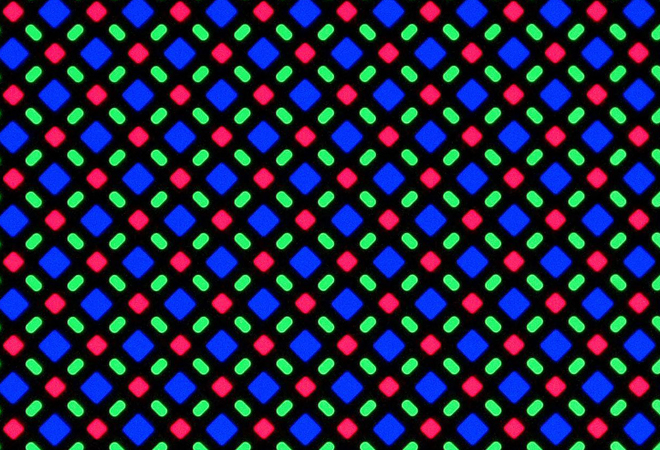
Although each screen pixel actually contains separate red, green, and blue elements, they are extremely small. When viewed from a normal distance, our eyes cannot resolve these individual components.
Instead, the light from the red, green, and blue elements blends together and is perceived as a single colour.
RGB images are designed to exploit this property of human vision. For every image pixel, the image stores three numerical values: one for red; one for green; and one for blue.
These values determine the brightness of the corresponding red, green, and blue elements on the display.
The combination of these three colour channels produces the full-colour image that we see on screen.
Conceptually:
Red Channel + Green Channel + Blue Channel
↓
RGB ImageLoad a colour image supplied with EBImage.
R
colour_img <- readImage(
system.file(
"images",
"sample-color.png",
package = "EBImage"
)
)
Display the image.
R
display(colour_img)
Note that the histogram of a colour image contains one distribution for each of the colour channels. The base R graphics version of the histogram function will sum all the values from each of the channels.
R
hist(colour_img)
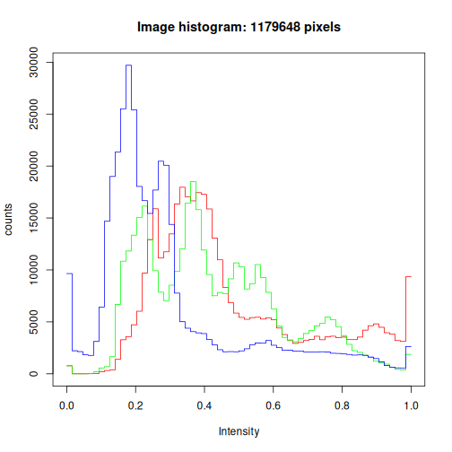
Inspect its dimensions and colorMode.
R
colour_img
OUTPUT
Image
colorMode : Color
storage.mode : double
dim : 768 512 3
frames.total : 3
frames.render: 1
imageData(object)[1:5,1:6,1]
[,1] [,2] [,3] [,4] [,5] [,6]
[1,] 0.4549020 0.4784314 0.4941176 0.5137255 0.5294118 0.5529412
[2,] 0.4588235 0.4784314 0.4941176 0.4980392 0.5215686 0.5490196
[3,] 0.4705882 0.4823529 0.4980392 0.5137255 0.5294118 0.5372549
[4,] 0.4666667 0.4745098 0.5058824 0.5137255 0.5450980 0.5647059
[5,] 0.4705882 0.4705882 0.4901961 0.5137255 0.5372549 0.5647059R
# or `colormode(colour_img)` or `str(colour_img)`
The third dimension corresponds to the red, green, and blue channels.
Exploring the RGB Channels
Extract the individual colour channels. EBImage’s
channel() function.
R
red_channel <- channel(colour_img, "red")
green_channel <- channel(colour_img, "green")
blue_channel <- channel(colour_img, "blue")
Display the channels separately.
R
display(
EBImage::combine(
red_channel,
green_channel,
blue_channel
),
all = TRUE
)
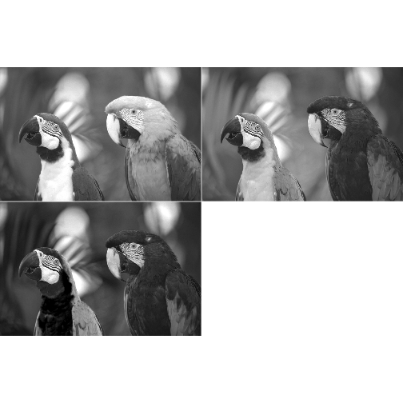
Notice that each channel is itself a grayscale image.
The brightness of a pixel indicates the contribution of that colour channel at that location.
We can turn each image back into a color image and display those as well:
R
red_col_channel <- rgbImage(
red = red_channel)
green_col_channel <- rgbImage(
green = green_channel
)
blue_col_channel <- rgbImage(
blue = blue_channel
)
display(
EBImage::combine(
red_col_channel,
green_col_channel,
blue_col_channel
),
all = TRUE
)
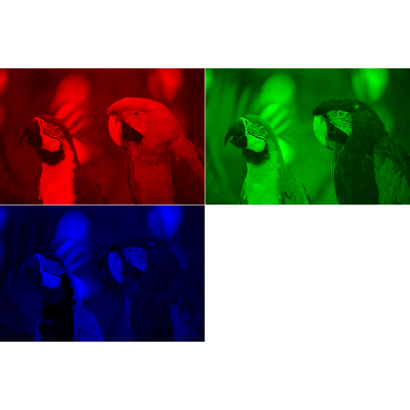
Challenge
A bright pixel in the red channel indicates:
- Strong red contribution
- Strong green contribution
- Strong blue contribution
1. Strong red contributionThe red channel records how much red contributes to each pixel in the final image.
Fluorescence Microscopy Is Different
Fluorescence microscopy images are often displayed in colour.
However, the colours usually do not represent the colours detected by the microscope.
Instead, fluorescence channels typically represent independent biological measurements. The camera (or detector) makes one measurement for each fluorescence probe. We can make multiple measurements in the same location because we can label cellular components independently with fluorophores that emit photons at different wavelengths. Subsequently, the individual channels are combined.
For example, a sample containing DNA stained with DAPI, expressing two fluorescent fusion proteins, GFP-Actin and mCherry-Tubulin, may be collected as three separate channels:
DAPI
GFP
mCherryConceptually:
Pixel
|
├── DAPI Intensity
├── GFP Intensity
└── mCherry IntensityThese measurements are not inherently blue, green, or red. The dectors do not see the wavelengths of the different channel images. They only count the number of photons arriving during the measurement interval during each measurement. They are simply numerical measurements acquired from different detectors, or from the same detector at different times. Because the same detector is used during the separate measurements, each pixel represents the same spatial location for each of the three measurements.
Channels Are Measurements
In fluorescence microscopy, channels represent measurements from different fluorophores or detectors. We assume that if a pixel contains a higher value, there were more fluorophores at that location when the image was made.
The colours shown on screen are usually assigned after the fact, for visualisation.
Pseudocolouring
Assigning colours to grayscale microscopy images is known as pseudocolouring.
Suppose we display the same image using several different colours.
Green
Magenta
Yellow
BlueThe displayed images look different, but the underlying data are unchanged.
Pseudocolouring helps researchers visualise and distinguish different channels.
Colours Do Not Change the Data
Consider a DAPI image.
It might be displayed as:
R
#Remember, img represents the DAPI image of nuclei acquired from a microscope.
blue_nuc <- rgbImage(
blue = img
)
display(blue_nuc)
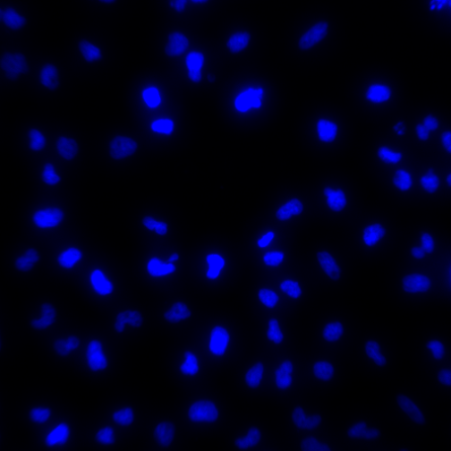
This matches our expectations because we know that DAPI emits in the “blue” range of the visible spectrum, therefore we expect that images of DAPI fluorescence should be blue. — BUT They don’t have to be.
The same image could equally be displayed as:
R
mag_nuc <- rgbImage(
red = img/2,
blue = img/2
)
yel_nuc <- rgbImage(
red = img/2,
green = img/2,
)
green_nuc <- rgbImage(
green = img
)
cyan_nuc <- rgbImage(
green = img/2,
blue = img/2
)
display(EBImage::combine(rgb_img, blue_nuc, mag_nuc, yel_nuc, green_nuc, cyan_nuc), all = TRUE)
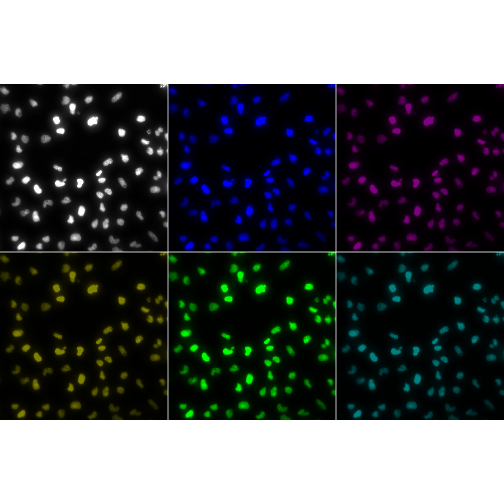
without altering the pixel values. We can even use color rather than
hue to represent intensity. EBImage has a function -
colormap() that maps a grayscale image using a
colormap.
R
color_img <- colormap(img, palette = viridis::magma(256))
display(color_img)
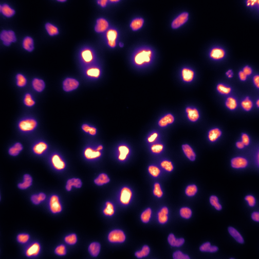
Creating Composite Images
Multiple fluorescence channels are often displayed together.
Imagine a sample containing:
Nuclei (DAPI)
Protein A (GFP)
Protein B (mCherry)Each channel is acquired independently.
The channels can then be combined into a single colour composite.
Conceptually:
DAPI → Blue
GFP → Green
mCherry → Red↓
Composite ImageR
#Load the cell body images that correspond to the nuclei images
cel <- readImage(system.file('images', 'cells.tif', package='EBImage'))
#Select the first frame only for our demo. This is the same field of view as img[,,1]
cel <- cel[,,1]
cells_green <- rgbImage(green = cel, blue=img)
cells_red <- rgbImage(red = cel, blue = img/2, green = img/2)
colour_cells <- EBImage::combine(cells_green, cells_red)
display(colour_cells, all = TRUE)
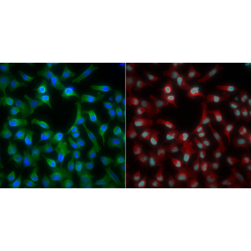
The resulting image helps visualise the spatial relationships between the different biological structures.
Challenge
Why must we create an RGB image before colouring saturated pixels red?
A grayscale image stores only one intensity value per pixel.
To display different colours, separate red, green, and blue channels are required.
An RGB image provides the additional colour information needed for coloured visualisations.
Channels and Quantitative Analysis
When analysing microscopy data, it is important to distinguish between:
Display Colour and Measurement Channel
For example:
Blue display colour does not necessarily mean:
Blue fluorescence
conversely:
Green display colour does not necessarily mean:
Green emission wavelength
The display colours are visualisation choices.
The channel measurements are the scientific data.
Think in Channels, Not Colours
During image analysis it is usually more useful to think in terms of channels rather than colours.
Segmentation and measurement are performed using image intensities, not display colours.
Looking Ahead
In this lesson we explored how microscopy images are represented and displayed using colour.
We learned that channels represent measurements, while colours are often chosen for visualisation.
In the next lesson we will begin modifying image data directly through image enhancement operations such as inversion, intensity scaling, and thresholding.
Key Points
- Grayscale images store one intensity value per pixel.
- RGB images store separate red, green, and blue values for each pixel.
- EBImage uses colour modes to distinguish grayscale and colour images.
- Fluorescence microscopy channels are measurements, not colours.
- Pseudocolouring changes appearance but not image data.
- Composite images are created by combining multiple channels.
- Display colours should not be confused with the underlying fluorescence measurements.
- Quantitative image analysis is performed on channel intensities rather than display colours.
Content from Image Enhancement
Last updated on 2026-08-18 | Edit this page
Estimated time: 75 minutes
Overview
Questions
- What is image enhancement?
- How can pixel values be modified?
- What is the difference between display changes and data changes?
- What is image inversion?
- What is thresholding?
- How can histograms help us understand image enhancement?
Objectives
- Apply image enhancement operations using EBImage.
- Distinguish between display operations and image processing operations.
- Modify image intensities using point operations.
- Invert image intensities.
- Create binary images through thresholding.
- Understand how image enhancement affects pixel values.
Introduction
In the previous lesson we explored how image data can be displayed in different ways.
We learned that changing brightness, contrast, or lookup tables (LUTs) can dramatically alter the appearance of an image without changing the underlying pixel values.
In this lesson we will begin modifying the image data itself.
Unlike display operations, image enhancement operations act directly on the pixel values that make up an image.
Display versus Data
Display operations affect how an image appears on screen.
Image enhancement operations modify the pixel values stored in the image.
These are fundamentally different processes.
Reading an Image
Load the EBImage package.
R
library(EBImage)
Read an image.
R
img <- readImage(system.file('images', 'cells.tif', package='EBImage')
)
# cells.tif contains 4 frames, let's subset the data so that our image object contains on ly the first frame.
img<- img[,,1]
Display the image.
R
display(img)
Inspect the range of pixel values.
R
range(img)
OUTPUT
[1] 0 1Create a histogram.
R
par(mfrow = c(1, 2))
hist(
as.vector(img),
main = "Graphics Histogram",
xlab = "Pixel Intensity"
)
hist(
img,
main = "EBImage Histogram",
xlab = "Pixel Intensity"
)
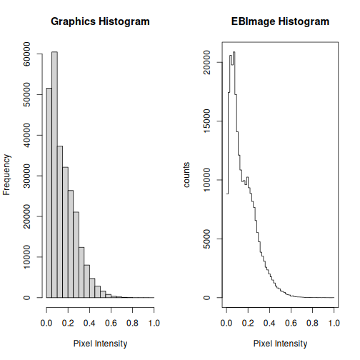
R
par(mfrow = c(1,1))
The histogram describes the distribution of pixel values that
comprise the image. NB when we call the histogram function on a vector
as above, R uses the base graphics version of the histogram function.
When we call it on an image object, the EBImage version of hist() is
used. If you prefer one or the other, you can specify it in the function
call – graphics::hist() or EBImage::hist()
Point Operations
Many image enhancement methods are known as point operations.
A point operation calculates each output pixel value using only the corresponding input pixel value.
Conceptually:
Input Pixel Value -> Operation -> Output Pixel ValueExamples include:
- image math
- inversion
- intensity scaling
- thresholding
Image Inversion
One of the simplest image enhancement operations is image inversion.
Bright pixels become dark and dark pixels become bright.
We can invert the image using:
R
img_inv <- 1 - img
Compare the original and inverted images.
R
display(EBImage::combine(img, img_inv), all = TRUE)
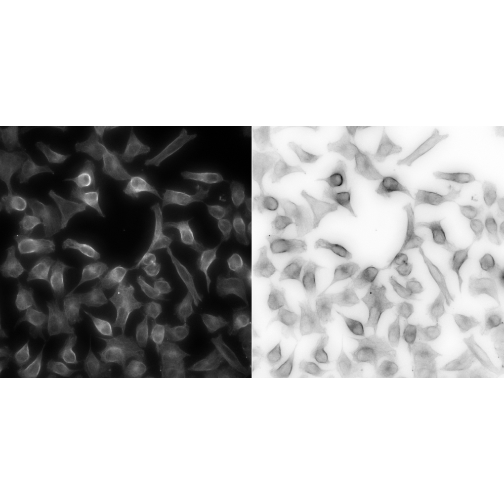
Histograms and Inversion
Compare histograms of the original & inverted images.
R
par(mfrow = c(1,2))
hist(
as.vector(img),
main = "Original Image",
xlab = "Pixel Intensity"
)
hist(
as.vector(img_inv),
main = "Inverted Image",
xlab = "Pixel Intensity"
)
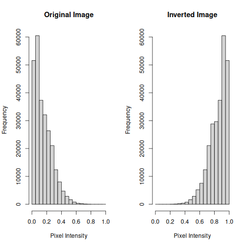
R
par(mfrow = c(1,1))
The pixel values have changed.
Consequently, the histogram has also changed.
Unlike some of the display operations in the previous lesson, inversion modifies the underlying image data.
Challenge
A pixel has an intensity value of:
0.8What value will it have after inversion?
Inversion calculates:
1 - 0.8giving:
0.2Bright pixels become dark and dark pixels become bright.
NB - we can invert the LUT too. In that case the image would look the same as if we had performed the inversion operation on every pixel, but would change the way we assign brightness to pixel values. Instead of assigning 0 to black and 255 to white, we would assign 0 to white and 255 to black. Be sure to keep track - it can get confusing.
Intensity Scaling
Another common operation is intensity scaling.
We have already encountered an example of intensity scaling in the previous lesson. Operations on the histogram, such as normalisation or equalisation change the underlying pixel intensity values. We assigned the new data to a new image object to prevent the original data from being changed. Some image processing software allows non-destructive brightness and contrast changes, usually by operating on a copy of the data.
Suppose we wish to make the image brighter. We can multiply every pixel value to get a brighter image.
R
img_bright <- img * 2
display(img_bright)
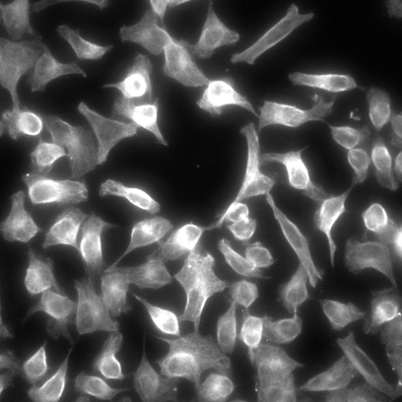
R
range(img_bright)
OUTPUT
[1] 0 2But what happens to pixel intensity values that end up greater than 1
after the multiplication? Remember that when the data are read into an
image object by EBImage’s readImage() function, the integer
values are scaled between 0 and 1. While multiplying will make these
values bigger (and therefore brigther), There is a potential for a pixel
to have a value greater than 1. In our example above, any pixel with a
value of > 0.5 in the original image will have a value > 1 in
img_bright. Pixel values greater than 1 will be clipped because an image
display expects an image to have values between 0 and 1. The display
will silently map any values that are greater than 1 to the brightest
intensity available — 1.0
We can visualise where the pixels with values greater than one are by thresholding (see below).
R
img_mask <- img >= 1.0
img_bright_mask <- img_bright >= 1.0
Display the original and brightened image and the two masks to see the effect of image multiplication. Let’s put the mask into the red channel to give the saturated pixels a red colour.
R
red_img_mask <- rgbImage(
red = img_mask
)
red_img_bright_mask <- rgbImage(
red = img_bright_mask
)
display(EBImage::combine(img, img_bright), all = TRUE)
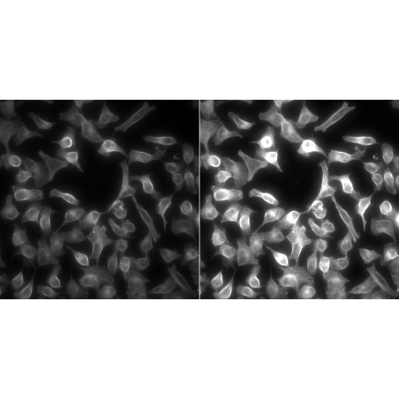
R
display(EBImage::combine(red_img_mask, red_img_bright_mask), all = TRUE)
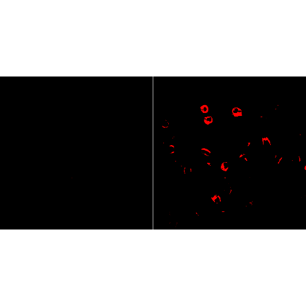
Compare the intensity ranges.
R
range(img)
OUTPUT
[1] 0 1R
range(img_bright)
OUTPUT
[1] 0 2Saturation
Excessive intensity scaling can lead to saturation. Saturation can occur by manipulating the pixel intensity values, as we are doing here, or it can occur at the point of image acquisition, if the detector settings or illumination intensity are not set correctly. Inspect the histogram of the original data to see if there are a significant number of pixels that have a value of 1.0 before any image enhancement has been performed.
Saturated pixels all take the same maximum value:
1.0Once saturation occurs, intensity information is lost.
Challenge
Suppose a pixel has a value of:
0.7The image is multiplied by:
2What value would the pixel have after clipping?
The new value becomes:
0.7 × 2 = 1.4Because values above 1 are clipped:
1.0The pixel value can no longer be compared to other pixel values in the image.
Thresholding
Thresholding is one of the most widely used operations in image analysis.
A threshold divides pixels into two groups.
For example:
Pixels above threshold (usually those that you care about)
Pixels below threshold (usuaully those that you don't care about)We can create a binary image using:
R
mask <- img > 0.2
This operation queries every pixel in the image and asks whether the
intensity value is greater than 0.2. Then it assigns either
TRUE or FALSE to that location depending on
the answer. Our mask is an array of Boolean values with the
same dimensions as the queried image object.
Display the object
R
mask
OUTPUT
Image
colorMode : Grayscale
storage.mode : logical
dim : 510 510
frames.total : 1
frames.render: 1
imageData(object)[1:5,1:6]
[,1] [,2] [,3] [,4] [,5] [,6]
[1,] FALSE FALSE FALSE FALSE FALSE FALSE
[2,] FALSE FALSE FALSE FALSE FALSE FALSE
[3,] FALSE FALSE FALSE FALSE FALSE FALSE
[4,] FALSE FALSE FALSE FALSE FALSE FALSE
[5,] FALSE FALSE FALSE FALSE FALSE FALSEdisplay the image and the binary mask:
R
display(EBImage::combine(img, mask), all = TRUE)
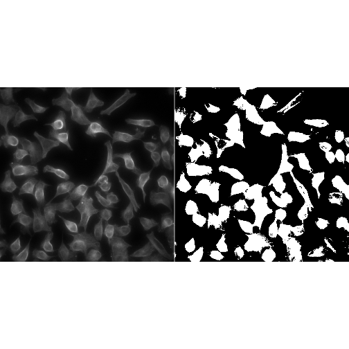
The resulting image mask contains only two values: TRUE
& FALSE
or equivalently: 1 & 0
Thresholding is often the first step in image segmentation workflows.
Choosing a Threshold
Different threshold values produce different results.
R
mask_1 <- img > 0.1
mask_2 <- img > 0.2
mask_3 <- img > 0.3
Display the three thresholded images.
R
display(
EBImage::combine(mask_1, mask_2, mask_3), all = TRUE
)
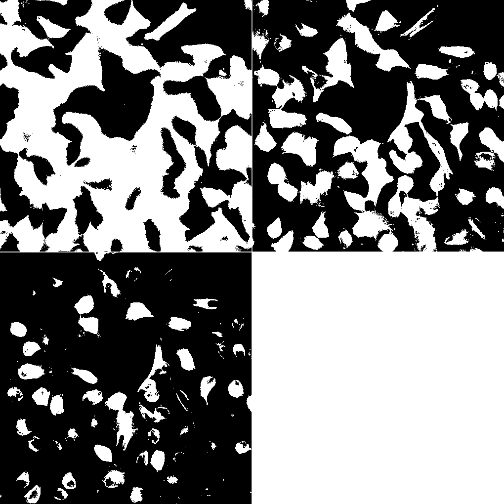
Notice how the detected objects change as the threshold increases.
Challenge
Which threshold would generally identify fewer pixels as objects?
0.1
0.2
0.3The threshold:
0.3identifies fewer pixels.
As the threshold increases, fewer pixels exceed the threshold value.
Histograms and Threshold Selection
Histograms can help us choose thresholds.
Display the histogram again.
R
hist(
breaks = 60,
as.vector(img),
main = "Pixel Intensity Histogram",
xlab = "Pixel Intensity"
)
abline(
v = 0.2,
col = "red",
lwd = 2
)
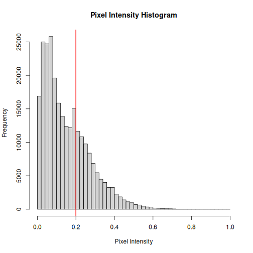
The red line indicates the threshold value.
Pixels to the left side of the threshold become 0
(background).
Pixels to the right side become 1 (foreground
objects).
Histograms Support Decision Making
Image histograms are your friends! Histograms provide a useful summary of image intensities and can help guide the selection of thresholds for segmentation and measurement workflows.
Comparing Display and Enhancement Operations
Consider the following operations.
Display Operations
- changing brightness and contrast
- changing LUTs
- altering display settings
These operations affect visualisation only.
Enhancement Operations
- inversion
- intensity scaling
- thresholding
These operations modify image data.
The distinction is important because image-analysis results depend on pixel values rather than image appearance.
Challenge
Which of the following modify image data?
- Changing a lookup table
- Adjusting display contrast
- Inverting an image
- Thresholding an image
- img <- normalize(img)
The correct answers are:
3. Inverting an image
4. Thresholding an image (although we've used it non-destructively)
5. Assigning the normalized values to the original object.Lookup tables and display contrast affect visualisation only.
Inversion and thresholding modify the underlying pixel values. Best practice guidelines assign these modified pixel arrays to new objects so that original data does not get lost.
Why Perform Image Enhancement?
Image enhancement is often performed to:
- improve image visibility
- simplify image interpretation
- support segmentation
- support quantitative measurements
However, enhancement operations should always be applied thoughtfully because they modify the image data itself. Always work on a copy of the original data
Document Your Processing Steps
Image enhancement changes data.
To support reproducibility, image-processing workflows should document the operations that have been applied to an image.
Looking Ahead
Thresholding converts grayscale images into binary images.
In the next lesson we will use these binary images to identify, label, and measure biological objects.
This process is known as image segmentation.
Key Points
- Image enhancement modifies image pixel values.
- Point operations apply a mathematical operation to each pixel independently.
- Image inversion converts bright pixels to dark pixels and vice versa.
- Intensity scaling can improve visibility but may lead to saturation.
- Thresholding converts grayscale images into binary images.
- Histograms provide useful information about image intensity distributions.
- Display operations and image enhancement operations are fundamentally different.
- Image enhancement should be documented to support reproducibility.
Content from Image Segmentation
Last updated on 2026-08-18 | Edit this page
Estimated time: 75 minutes
Overview
Questions
- What is image segmentation?
- How can objects be separated from the background?
- What is a binary mask?
- How can individual objects be identified?
- How can segmentation results be visualised and assessed?
Objectives
- Define image segmentation.
- Create binary masks using thresholding.
- Label connected objects.
- Count segmented objects.
- Visualise segmentation results.
- Recognise common segmentation challenges.
Introduction
In the previous lesson we used thresholding to create binary images.
Thresholding allows us to separate pixels into two classes:
Foreground (These pixels are those you care about - objects)and
Background (These are the pixels you don't care about)However, biological image analysis often requires more than simply identifying foreground pixels.
For example, we may wish to:
- count nuclei
- measure cell size
- quantify fluorescence intensity
- compare object shape descriptors
To perform these measurements, we must first identify individual objects.
This process is known as image segmentation.
What Is Segmentation?
Segmentation is the process of dividing an image into meaningful regions.
In bioimage analysis these regions often correspond to biological structures such as:
- nuclei
- cells
- tissues
- organelles
Conceptually:
Image -> Segmentation -> Objects + BackgroundThe goal is to identify the set of pixels belonging to each biological object.
Segmentation Is Often the Most Important Step
Many downstream measurements depend on segmentation quality.
Poor segmentation can lead to inaccurate biological conclusions.
Reading an Image
Load EBImage.
R
library(EBImage)
Read an image.
R
img <- readImage(
system.file("images", "nuclei.tif", package = "EBImage"))
#Select a single frame for demonstration purposes.
img <- img[,,1]
If you want, display the image with display(img). By
now, you probably knwo what this image looks like.
Creating a Binary Mask
A common segmentation workflow begins with thresholding.
Create a binary mask.
R
mask <- img > 0.2
Display the result.
R
display(mask)

The resulting image contains only two classes:
Foreground (things you care about, your 'objects')
Background (things you don't care about)or equivalently:
TRUE / 1
FALSE / 0Challenge
Which pixels become foreground after thresholding?
Pixels with intensities greater than the threshold value become foreground pixels. In some software (e.g. Fiji) you can specify which set of pixels becomes the background and which becomes the foreground.
Segmentation Depends on Threshold Choice
Different threshold values can produce very different segmentation results.
Create several masks.
R
mask_1 <- img > 0.1
mask_2 <- img > 0.2
mask_3 <- img > 0.3
Display them.
R
display(
EBImage::combine(
mask_1,
mask_2,
mask_3
),
all = TRUE
)

Notice how increasing the threshold changes the detected objects.
Challenge
Which threshold is likely to produce the largest foreground regions?
0.1
0.2
0.30.1Lower thresholds classify more pixels as foreground. Not necessarily more objects though, as each object must be separated from others by background pixels. Exploring thresholds is often part of an initial classification strategy.
A Binary Mask Is Not Yet Segmentation
Although the binary mask separates foreground from background, it does not yet identify individual objects.
Consider: Object A & Object B
Both may simply appear as foreground pixels.
To measure them separately, we must identify each object individually.
Connected Components Analysis
Connected-component labelling identifies sets of connected foreground pixels as unique objects. You can imagine that a labeller starts at a pixel with a value of 0 — remember, at this point, there are only 0s and 1s. It then traverses the entire matrix. Every time it encounters a pixel with a value of 1, it assigns it to the next value in turn. I.e. the first object gets that value 1, the second object gets the value 2 and so on, until every pixel has been visited. All the pixels that had a value of 0 remain 0, but every pixel that was 1 is now assigned to a unique number depending on the position of the object in relation to the starting point of the labeller. Every pixel that has value 1 is first checked to see whether it is connected to another pixel of value > 0 before it is assigned a new unique value. Pixel values are changed so that every pixel in a single object gets the same pixel intensity value.

Conceptually:
Binary Mask Image
↓
Connected Components Analysis
↓
Object Label ImageEach object receives a unique identifier. Note that the analysis has produced a new image with pixel values. We can visualise this image.
Labelling Objects
Label the objects in the mask. The bwlabel() function
from EBImage labels connected sets of pixels in a binary mask image. It
assigns a unique increasing integer starting from 1 to each separate
foreground object, treating pixels with a value of 0 as the background,
leaving them unaltered. The bwlabel image outputs a label
image. We can visualise this label image with the
colorLabels() function. . colorLabels() takes
a label matrix (i.e. a label image, typically from
bwlabel()) and returns a color-coded image where adjacent
objects are visually distinct.
R
labels <- bwlabel(mask)
Inspect the result.
R
display(colorLabels(labels))

Each colour represents a different object.
Colours Represent Labels
The colours in a labelled image do not represent intensity values.
They simply help us distinguish neighbouring objects.
Counting Objects
How many objects were detected?
Inspect the labels.
R
max(labels)
OUTPUT
[1] 74The largest label number corresponds to the total number of detected objects in the image.
Challenge
If the highest label value is:
17how many objects were detected?
17 objectsEach object receives a unique label.
Visualising Segmentation Results
Labelling allows us to visualise individual objects.
Visualising the labelled objects, as above, is helpful, but segmentation results are often easier to assess when displayed alongside the original image.
R
display(
EBImage::combine(
toRGB(img),
colorLabels(labels)
),
all = TRUE
)

Comparing the original image and segmentation result allows us to identify errors and missed objects.
Overlaying Labels on the Original Image
An alternative approach is to overlay the segmentation result on the
original image. The paintObjects() function in EBImage
highlights and marks segmented objects in an image. It outlines object
boundaries and/or fills their interiors using specified colors and
opacities, working closely with labeled masks from functions like
bwlabel().
R
overlay <- paintObjects(
labels,
toRGB(img)
)
display(overlay)

This allows the image data and segmentation result to be viewed together.
Challenge
Why is it useful to inspect segmentation overlays?
Overlays allow us to compare the segmentation directly with the original image.
This can reveal:
- missed objects
- merged objects
- incorrectly segmented regions
Common Segmentation Challenges
Segmentation is rarely perfect.
Common problems include:
- Missing Objects, if the threshold is too high.
- Real Objects are excluded.
- Noise, if the threshold is too low. -Background pixels are classified as objects.
- Merged Objects. Multiple closely spaced objects merge into one
object.
- Under represent the # of objects with the wrong shape.
- Fragmented objects. Single objects are fragmented into several
objects.
- Over represent the # of objects with the wrong shape.
There Is No Universal Threshold
Segmentation methods often need to be adapted to the image and biological question being studied.Exploratory analysis is used to determine a threshold.
Segmentation Supports Measurement
Once objects have been identified, we can begin to measure them.
For example:
- area
- shape
- perimeter
- intensity
Segmentation creates the link between image pixels and biological objects.
Without segmentation, object-based measurements are usually impossible.
Challenge
Why must segmentation usually be performed before measuring nuclear area?
Area measurements require the pixels belonging to each nucleus to be identified.
Segmentation determines which pixels belong to each object.
Looking Ahead
In this lesson we transformed image pixels into labelled objects. As welearned, a single threshold is often only the first step of creating a biologically meaningful segmentation. In the next lesson we will explore tools refine these masks, to make them more relevant. Only after we have a reasonable segmentation and labelling strategy, does it make sense to make measurements and extract quantitative information from biological images.
Key Points
- Segmentation divides images into meaningful regions.
- Thresholding can be used to create binary masks.
- Binary masks separate foreground from background.
- Connected-component labelling identifies individual objects.
- Each segmented object receives a unique label.
- Segmentation results should always be inspected visually.
- Segmentation quality influences all downstream measurements.
- Segmentation provides the foundation for quantitative image analysis.
Content from Morphological Operations
Last updated on 2026-08-18 | Edit this page
Estimated time: 75 minutes
Overview
Questions
- How can segmentation results be improved?
- What is pixel connectivity?
- What are morphological operations?
- How can small artefacts be removed from binary images?
- How can touching objects be separated?
Objectives
- Explain the concept of connectivity.
- Apply morphological operations to binary images.
- Remove small artefacts from segmentation masks.
- Fill holes within segmented objects.
- Understand the purpose of distance maps.
- Use watershed segmentation to separate touching objects.
Introduction
In the previous lesson we used thresholding to create binary masks and identified individual objects using connected-component labelling.
However, segmentation is rarely perfect.
Real microscopy images often contain:
- noise
- small artefacts
- holes within objects
- touching nuclei
- fragmented objects
Before making biological measurements, it is often necessary to refine a segmentation.
In this lesson we will explore a set of tools known as morphological operations that help improve binary masks and prepare them for quantitative analysis. In contrast to point operations, morphological operations depend not only on the value of the pixel in question, but the values of the neighbourhood of pixels that surround the pixel.
Reading an Image
Load the EBImage package.
R
library(EBImage)
Load the example nuclei image provided with EBImage and select a single frame for exploration.
R
img <- readImage(
system.file(
"images",
"nuclei.tif",
package = "EBImage"
)
)
nuclei <- img[,,1]
Display the image.
R
display(nuclei)

R
mask <- nuclei > 0.175
Create a binary mask.
R
mask <- nuclei > 0.175
Display the mask.
R
display(mask)
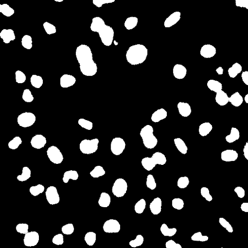
Although the nuclei are obvious to a trained biologist, the segmentation is not perfect.
Challenge
Why might a simple threshold not be sufficient for accurate segmentation?
Thresholding separates foreground from background but does not account for:
- image noise
- holes inside objects
- touching objects
- irregular boundaries
Additional processing is often required before labelling and measurement.
Connectivity
Before discussing morphological operations, we need to understand the concept of connectivity.
Connectivity defines which neighbouring pixels are considered connected.
Connectivity comes in two flavours:
Four-Connectivity
A pixel is connected only to its horizontal and vertical neighbours.
X
|
X - P - X
|
XEight-Connectivity
A pixel is connected to all surrounding neighbours.
X X X
X P X
X X XIn biological images, connectivity influences how objects are identified and labelled.
Connectivity Influences Segmentation
Two adjacent pixels may belong to the same object or separate objects depending on the connectivity rule used.
Morphological Operations
Morphological operations modify the shape of objects in binary images.
They operate on image structures rather than intensity values. We start with a mask, modify it using some rule, and output a modified mask image.
Conceptually:
Binary Mask -> Morphological Operation -> Modified MaskThese operations can be used to:
- remove noise
- smooth boundaries
- fill gaps
- separate objects
Structuring Elements
Many morphological operations use a small template called a structuring element.
Create a circular structuring element.
R
brush <- makeBrush(
size = 5,
shape = "disc"
)
Display the brush.
R
display(brush)
The structuring element determines how neighbouring pixels influence
the operation. The structuring element defines the size and shape of the
neighbourhood used in the operation. Larger brushes produce larger
changes to object boundaries, while smaller brushes produce more subtle
effects. using a brush with a size = 3 is roughly equivalent to dilating
or eroding by one pixel. In EBImage, the two operations are
erosion() and dilation(). Each function takes
two arguments, a binary image to refine and the structuring element (aka
brush) that determines the size of the change that the
function creates.
Dilation
Dilation expands foreground objects. It adds pixels to the boundaries of objects.
R
dilated <- dilate(mask, brush)
Display the original and dilated masks to see how
dilation() has changed the original mask.
R
display(
EBImage::combine(
toRGB(mask),
toRGB(dilated)
),
all = TRUE
)
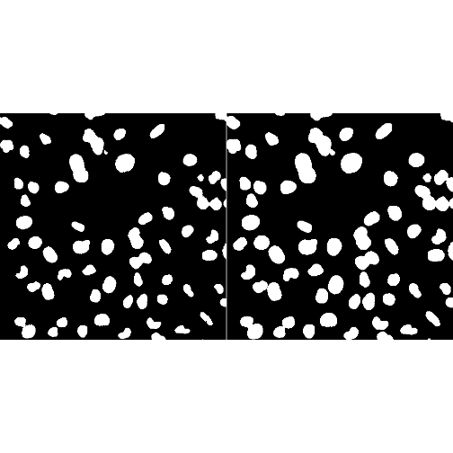
Notice that objects become larger.
Small gaps may also be filled.
Challenge
Would dilation tend to increase or decrease object size?
Increase.
Dilation adds pixels to object boundaries, making objects larger.
Erosion
Erosion removes pixels from object boundaries.
R
eroded <- erode(mask, brush)
Display the result.
R
display(
EBImage::combine(
toRGB(mask),
toRGB(eroded)
),
all = TRUE
)
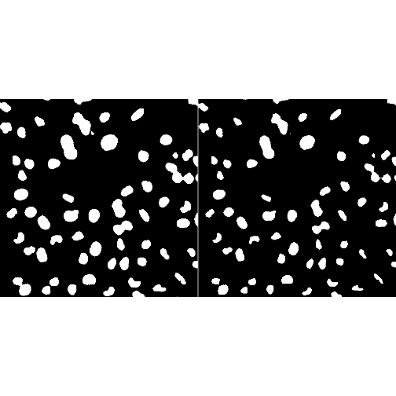
Objects become smaller.
Thin structures may disappear entirely.
Challenge
What effect might erosion have on very small objects?
Very small objects may be reduced substantially or disappear completely.
Opening & Closing
Usually, you don’t want to significantly change the obect’s size. Opening and closing are used instead of basic erosion and dilation to maintain object size. Opening removes small dots and breaks thin lines. Closing fills small holes and joins broken parts. In contrast, Erosion/Dilation changes the size of objects.
Opening is one erosion operation followed by one dilation operation.
R
opened <- opening(mask, brush)
Display the comparison.
R
display(
EBImage::combine(
toRGB(mask),
toRGB(opened)
),
all = TRUE
)
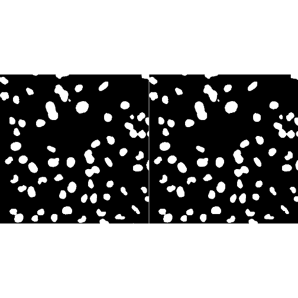
Opening is often used to remove small objects and noise.
What Opening Does
Small Artefacts -> Removedwhile larger objects are largely preserved.
Closing is the opposite of Opening is one dilation followed by one erosion.
R
closed <- closing(mask, brush)
Display the result.
R
display(
EBImage::combine(
toRGB(mask),
toRGB(closed)
),
all = TRUE
)
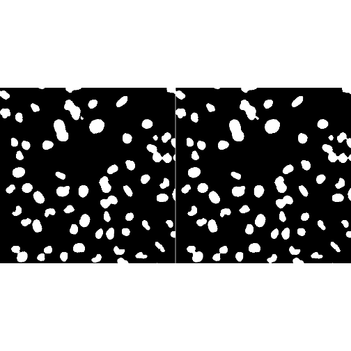
Closing helps to:
- fill small gaps
- smooth object boundaries
- connect nearby object regions
What Closing Does
Small Gaps -> FilledChallenge
Which operation would generally be most useful for removing small isolated noise particles?
- Opening
- Closing
1. OpeningOpening is commonly used to remove small foreground artefacts. If the artefacts are small holes in the objects, then Closing would be useful.
See this figure of a noisy thresholded image of a fingerprint.
Fingreprint Corrupted With Noise. Fingreprint Opened Fingerprint Opened & Closed
Filling Holes
Objects may sometimes contain holes.
For example:
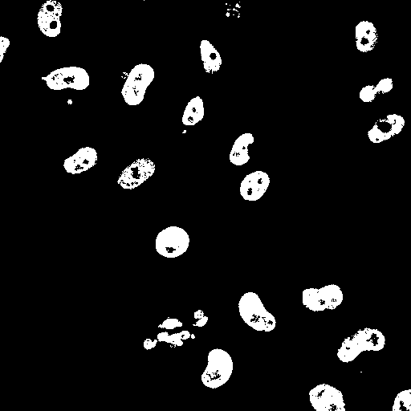
where the centre of the object is incorrectly classified as background.
The fillHull() function can fill holes.
R
filled <- fillHull(mask)
Display the result. Note that this particular binary image already has no objects with holes.
R
display(
EBImage::combine(
toRGB(mask),
toRGB(filled)
),
all = TRUE
)
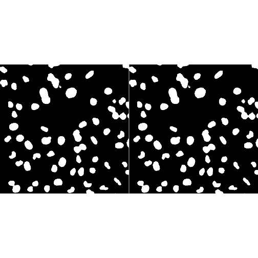
This operation is particularly useful when working with nuclei, as nucleoli are often less bright than the neighbouring nucleoplasm.
Filling Holes Simplifies Measurement
Area measurements are often more reliable when segmented objects form solid regions.
The Problem of Touching Objects
Thresholding often merges neighbouring nuclei into a single object.
There are several examples of this issue in our binary image of nuclei.
This phenomenon is called under-segmentation.
Distance Maps
One approach to separating touching objects involves calculating the
distance from each foreground pixel to the nearest background pixel. The
distmap() function from EBImage calculates this. Note that
again, the input is a binary image and the ouput is another image where
the pixel values indicate fow far each pixel is from the nearest
background pixel. Because these matrixes have pixel values, we can
visualise these images.
Create a distance map.
R
dmap <- distmap(mask)
Display the distance map.
R
display(
normalize(dmap)
)
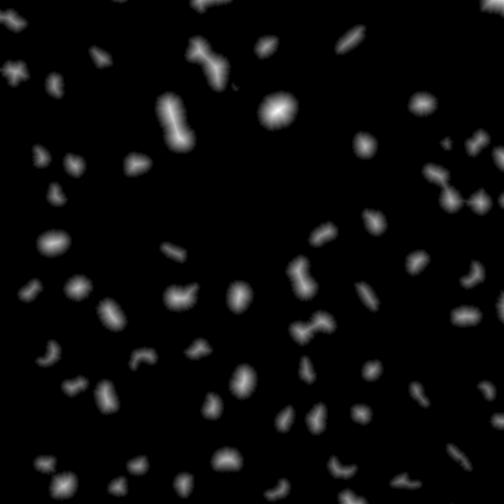
Bright regions correspond to pixels located near object centres.
Challenge
Where do you expect the largest distance values to occur?
Near the centres of objects.
These pixels are furthest from the object boundaries.
How Watershed Segmentation Works
The idea behind watershed segmentation comes from imagining the image as a landscape.
A distance map contains large values near the centres of objects and smaller values near object boundaries. To make the watershed concept easier to visualise, imagine turning this landscape upside down.
After inversion:
Object Centre
↓
Valley
Object Boundary
↓
RidgeFor two touching nuclei, the inverted distance map might look something like:
\ __ /
\ / \ /
\ / \ /
\/ \/The valleys correspond approximately to the centres of the nuclei, while the ridge between them corresponds to the region where the objects touch.
Now imagine slowly filling the valleys with water.
As the water level rises, each valley fills independently and expands outwards. Eventually, water originating from neighbouring valleys meets at the ridge between them.
If the water were allowed to mix, the two objects would merge. Instead, the watershed algorithm constructs a barrier wherever two expanding regions meet.
These barriers become the segmentation boundaries.
Conceptually:
Binary Mask
↓
Distance Map
↓
Invert Landscape
↓
Fill Valleys With Water
↓
Build Barriers Where Waters Meet
↓
Separate ObjectsThe result is that a single connected object in the binary mask can be divided into multiple biologically meaningful objects.
In microscopy, the watershed segmentation is particularly useful for separating touching nuclei. Nuclear identification is often the first step in identifying cells. Thresholding may identify a cluster of adjacent nuclei as one large object, but the watershed algorithm can often recover the individual nuclei by placing boundaries between their centres.
A useful way to think about watershed segmentation is:
“If water were poured into each object centre, where would neighbouring pools of water meet?”
The watershed boundary is constructed at those meeting points.
R
ws <- watershed(dmap)
Display the result.
R
display(
colorLabels(ws)
)
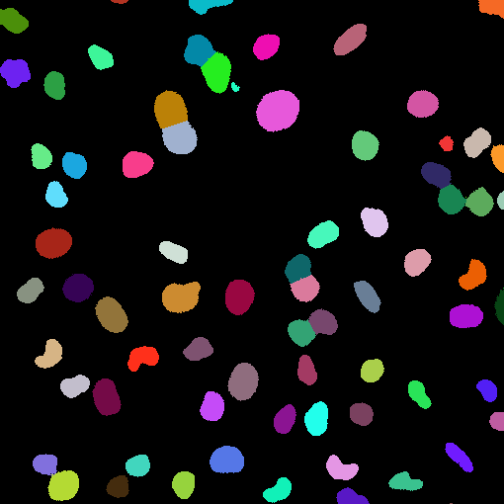
Each object receives a unique label. Notice that the
ws() function also inlcudes the connected components
analysis – in EBImage.
Watershed segmentation often separates objects that were previously merged.
Visualising Watershed Results
Compare the watershed segmentation to the original image and the segmentation without the watershed algorithm.
R
labels <- bwlabel(mask)
overlay_ws <- paintObjects(
ws,
toRGB(normalize(nuclei))
)
overlay_label <- paintObjects(
labels,
toRGB(normalize(nuclei))
)
display(EBImage::combine(overlay_ws, overlay_label), all = TRUE)
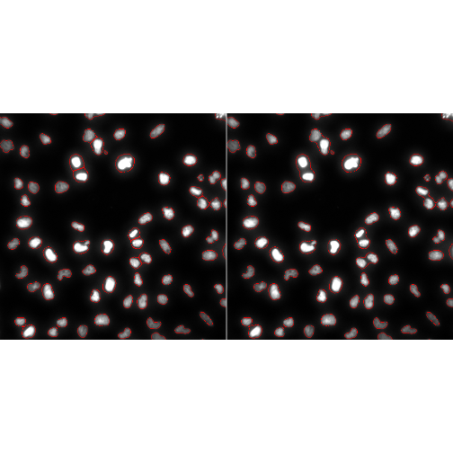
Overlay visualisation makes it easier to evaluate segmentation quality.
Challenge
Why might watershed segmentation be useful for nuclei images?
Nuclei often touch or overlap.
Thresholding may merge adjacent nuclei into a single object.
Watershed segmentation can help separate these merged regions into individual objects.
Segmentation Is an Iterative Process
Image analysis rarely consists of a single thresholding step.
A typical workflow might be:
Image
↓
Threshold
↓
Morphological Operations
↓
Distance Map
↓
Watershed Segmentation
↓
Labelled ObjectsEach stage improves the quality of the final segmentation. Note that in some watershed implementations (e.g. Fiji) includes the distance map operation as part of the watershed.
There Is No Perfect Segmentation
The best segmentation is one that is appropriate for the biological question being asked and supports reliable measurements.
Looking Ahead
In this lesson we refined segmentation masks using morphological operations and watershed segmentation.
In the next lesson we will use these labelled objects to make quantitative measurements such as:
- object count
- area
- shape
- fluorescence intensity
Key Points
- Connectivity defines how neighbouring pixels are linked into objects.
- Morphological operations modify object shape in binary images.
- Dilation expands objects.
- Erosion shrinks objects.
- Opening removes small foreground artefacts.
- Closing fills small gaps and smooths boundaries.
- Filling holes can improve segmented objects.
- Distance maps identify object centres.
- Watershed segmentation can separate touching objects.
- Segmentation quality strongly influences downstream measurements.
Content from Measuring Biological Objects
Last updated on 2026-08-18 | Edit this page
Estimated time: 75 minutes
Overview
Questions
- How can segmented objects be measured?
- What properties can be measured from biological objects?
- How can fluorescence intensity be quantified?
- How can image measurements be organised as tidy data?
- How can a measurement workflow be applied to multiple images?
Objectives
- Measure properties of segmented biological objects.
- Count segmented nuclei.
- Calculate shape measurements.
- Organise measurements as tidy data.
- Visualise measurements using ggplot2.
- Apply the same measurement workflow to multiple images.
- Export measurements for downstream analysis.
Introduction
In the previous lessons we learned how to:
Read Images
↓
Enhance Images
↓
Segment Objects
↓
Refine SegmentationsThe goal of image analysis is usually not to create better images.
Instead, the goal is to generate quantitative measurements that can be used to answer biological questions.
In this lesson we will measure properties of segmented nuclei and convert image data into a table of measurements that can be analysed using the broader R ecosystem.
From Images to Data
Segmentation identifies objects.
Measurement converts those objects into quantitative data.
Reading the Image Stack
Load the required packages.
R
library(EBImage)
library(ggplot2)
Load the nuclei image supplied with EBImage.
R
img <- readImage(
system.file(
"images",
"nuclei.tif",
package = "EBImage"
)
)
Inspect the dimensions.
R
dim(img)
OUTPUT
[1] 510 510 4The image contains four frames.
Display all four images.
R
display(img, all = TRUE)
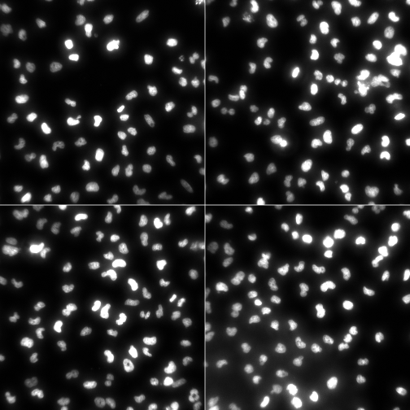
Starting With One Image
To understand the workflow, we will first analyse a single frame.
Extract the first image.
R
nuclei <- img[,,1]
Display the image.
R
display(nuclei)

Segmenting the Nuclei
Create a binary mask.
R
mask <- nuclei > 0.2
Display the mask.
R
display(mask)

Apply a small amount of morphological cleanup.
R
mask <- opening(
mask,
makeBrush(
size = 5,
shape = "disc"
)
)
Create a distance map.
R
dmap <- distmap(mask)
Separate touching nuclei using watershed segmentation.
R
labels <- watershed(dmap)
Display the labelled objects.
R
display(
colorLabels(labels)
)
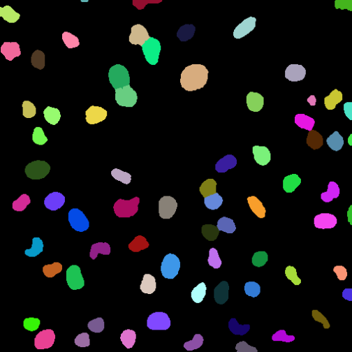
Each segmented nucleus has now been assigned a unique label.
Counting Objects
The simplest measurement is object count.
R
max(labels)
OUTPUT
[1] 71Each label corresponds to a segmented object.
Measuring Object Shape
EBImage can calculate a variety of shape measurements.
R
shape_features <- computeFeatures.shape(
labels
)
Inspect the first few measurements.
R
head(shape_features)
OUTPUT
s.area s.perimeter s.radius.mean s.radius.sd s.radius.min s.radius.max
1 1255 115 19.56079 1.354706 16.851564 22.20696
2 863 99 16.16382 1.395929 13.934709 18.91353
3 789 96 15.33404 1.303375 10.882979 17.80045
4 337 72 10.20631 2.551165 5.555573 14.10685
5 802 90 15.57667 1.779067 12.738481 18.94208
6 791 93 15.52903 2.644496 10.779113 20.42890Each row represents a nucleus.
Each column represents a measurement.
Creating Tidy Data
Many R packages work most naturally with data frames.
Creaet a data fram of the measurements.
R
shape_df <- as.data.frame(
computeFeatures.shape(labels)
)
Inspect the data.
R
head(shape_df)
OUTPUT
s.area s.perimeter s.radius.mean s.radius.sd s.radius.min s.radius.max
1 1255 115 19.56079 1.354706 16.851564 22.20696
2 863 99 16.16382 1.395929 13.934709 18.91353
3 789 96 15.33404 1.303375 10.882979 17.80045
4 337 72 10.20631 2.551165 5.555573 14.10685
5 802 90 15.57667 1.779067 12.738481 18.94208
6 791 93 15.52903 2.644496 10.779113 20.42890Each row represents a single nucleus.
Each column represents a single measurement.
This follows the principles of tidy data:
- each row represents one observation
- each column represents one variable
- each cell contains one value
Image Analysis Produces Tidy Data
A common goal of image analysis is to transform image pixels into structured datasets that can be analysed using standard statistical and visualisation tools.
Measuring Nuclear Area
Area is often one of the most important biological measurements.
Inspect the area measurement.
R
head(
shape_df$s.area
)
OUTPUT
[1] 1255 863 789 337 802 791Area is reported in pixels.
Visualising Nuclear Areas
Create a histogram of nuclear areas.
R
ggplot(
shape_df,
aes(x = s.area)
) +
geom_histogram(
bins = 20
) +
labs(
title = "Distribution of Nuclear Areas",
x = "Area (pixels)",
y = "Count"
)
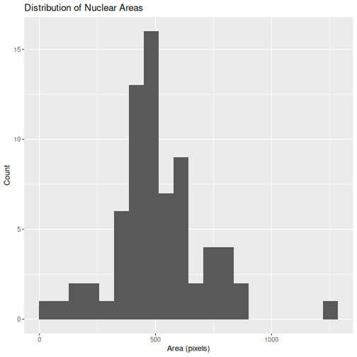
The histogram summarises the distribution of nucleus sizes within the image.
Notice that we are no longer visualising an image.
Instead, we are visualising measurements extracted from biological objects.
Exploring Shape Measurements
Nuclei can be described using many measurements.
For example, we can compare object area and perimeter.
R
ggplot(
shape_df,
aes(
x = s.area,
y = s.perimeter
)
) +
geom_point() +
labs(
x = "Area (pixels)",
y = "Perimeter (pixels)"
)
Each point represents a single nucleus.
Measuring Intensity
Object shape is not the only quantity that can be measured.
We can also measure pixel intensities inside each segmented nucleus.
Calculate intensity measurements.
R
intensity_features <- as.data.frame(
computeFeatures.basic(
labels,
nuclei
)
)
Inspect the results.
R
head(intensity_features)
OUTPUT
b.mean b.sd b.mad b.q001 b.q005 b.q05 b.q095 b.q099
1 0.6448934 0.3280021 0.5523412 0.2039216 0.2156863 0.6274510 1.0000000 1
2 0.5980506 0.3275716 0.3604753 0.2078431 0.2196078 0.4705882 1.0000000 1
3 0.5885136 0.3277748 0.3372188 0.2039216 0.2156863 0.4509804 1.0000000 1
4 0.5512306 0.2463818 0.3081482 0.2039216 0.2196078 0.5411765 0.9968627 1
5 0.6208841 0.2668144 0.3662894 0.2078431 0.2235294 0.6431373 1.0000000 1
6 0.6496963 0.2946438 0.4593153 0.2074510 0.2215686 0.6901961 1.0000000 1Mean Intensity
One useful measurement is mean intensity.
R
head(
intensity_features$b.mean
)
OUTPUT
[1] 0.6448934 0.5980506 0.5885136 0.5512306 0.6208841 0.6496963Mean intensity describes the average signal within a nucleus.
Challenge
Which nucleus has the stronger fluorescence signal?
Nucleus A = 0.21
Nucleus B = 0.38Nucleus BThe larger mean intensity indicates a stronger signal.
Combining Measurements
Combine shape and intensity measurements.
R
features_df <- cbind(
shape_df,
intensity_features
)
Inspect the combined table.
R
head(features_df)
OUTPUT
s.area s.perimeter s.radius.mean s.radius.sd s.radius.min s.radius.max
1 1255 115 19.56079 1.354706 16.851564 22.20696
2 863 99 16.16382 1.395929 13.934709 18.91353
3 789 96 15.33404 1.303375 10.882979 17.80045
4 337 72 10.20631 2.551165 5.555573 14.10685
5 802 90 15.57667 1.779067 12.738481 18.94208
6 791 93 15.52903 2.644496 10.779113 20.42890
b.mean b.sd b.mad b.q001 b.q005 b.q05 b.q095 b.q099
1 0.6448934 0.3280021 0.5523412 0.2039216 0.2156863 0.6274510 1.0000000 1
2 0.5980506 0.3275716 0.3604753 0.2078431 0.2196078 0.4705882 1.0000000 1
3 0.5885136 0.3277748 0.3372188 0.2039216 0.2156863 0.4509804 1.0000000 1
4 0.5512306 0.2463818 0.3081482 0.2039216 0.2196078 0.5411765 0.9968627 1
5 0.6208841 0.2668144 0.3662894 0.2078431 0.2235294 0.6431373 1.0000000 1
6 0.6496963 0.2946438 0.4593153 0.2074510 0.2215686 0.6901961 1.0000000 1Each row represents a nucleus.
The columns now contain both:
- shape measurements
- intensity measurements
Exploring Relationships Between Measurements
Compare area and mean intensity.
R
ggplot(
features_df,
aes(
x = s.area,
y = b.mean
)
) +
geom_point() +
labs(
x = "Area (pixels)",
y = "Mean Intensity"
)

Plots such as this can help identify biological relationships between measurements.
Images Become Data
At this stage of the workflow we are no longer analysing images directly.
We are analysing measurements extracted from biological objects.
Visualising Nuclear Intensity Measurements
Earlier we measured the mean intensity of each segmented nucleus.
We can visualise those measurements using a histogram.
R
ggplot(
features_df,
aes(x = b.mean)
) +
geom_histogram(
bins = 15
) +
labs(
title = "Distribution of Mean Nuclear Intensities",
x = "Mean Intensity",
y = "Count"
)
The histogram summarises the intensity measurements for every segmented nucleus.
Notice that not all nuclei have the same intensity.
Some nuclei have relatively low mean intensities, while others have substantially higher values.
This variation is often referred to as biological heterogeneity.
Biological Variation
Image analysis allows us to quantify differences between individual cells.
Rather than simply observing that cells “look different”, we can measure and visualise those differences quantitatively.
From Measurements to Biological Insight
The image analysed in this lesson is not intended for cell-cycle analysis.
However, similar measurements are widely used in biological research.
For example, consider a fluorescence image in which DNA has been stained with a DNA-binding dye.
Cells in different phases of the cell cycle often contain different amounts of DNA:
G1 Phase
↓
Lower DNA Content
S Phase
↓
DNA Replication
G2 Phase
↓
Higher DNA ContentIf fluorescence intensity is proportional to DNA content, a histogram of nuclear intensities may reveal distinct populations of cells.
Conceptually:
Number of Cells
^
|
| /\ /\
| / \ / \
| / \___ ____/ \
+---------------------------->
G1 S G2
DNA ContentIn an experiment designed to measure DNA content, such a distribution could be used to investigate:
- cell-cycle progression
- responses to drug treatment
- changes in cellular physiology
- differences between biological conditions
The important idea is not the specific biological interpretation.
The important idea is that image analysis transforms images into measurements, and measurements can generate biological insight.
Challenge
Why is a histogram often more informative than simply looking at the original image?
The image allows us to see individual nuclei, but it can be difficult to judge overall patterns by eye.
A histogram summarises measurements across many objects simultaneously and can reveal trends, variation, and potentially distinct biological populations.
Quantitative Biology
Earlier in the course we focused on images.
Now we are beginning to focus on measurements.
This transition is one of the most powerful aspects of bioimage analysis.
Conceptually:
Image
↓
Segmentation
↓
Objects
↓
Measurements
↓
Biological InterpretationThe measurements extracted from images can be analysed using many of the same approaches used for other biological datasets, including:
- summary statistics
- hypothesis testing
- data visualisation
- modelling
Images provide the raw information.
Measurements allow us to answer biological questions.
Applying the Workflow to Multiple Images
So far we have analysed only one frame.
However, the image stack contains four frames.
One of the advantages of scripted image analysis is that the same workflow can be applied repeatedly.
Conceptually:
Image 1
Image 2
Image 3
Image 4
↓
Same Workflow
↓
One DatasetCreating a Measurement Function
Create a function that performs segmentation and measurement.
R
measure_nuclei <- function(image, frame_id) {
mask <- image > 0.2
mask <- opening(
mask,
makeBrush(
size = 5,
shape = "disc"
)
)
labels <- watershed(
distmap(mask)
)
shape_df <- as.data.frame(
computeFeatures.shape(labels)
)
shape_df$frame <- frame_id
shape_df
}
Apply the function to the first image.
R
measure_nuclei(
img[,,1],
frame_id = 1
)
OUTPUT
s.area s.perimeter s.radius.mean s.radius.sd s.radius.min s.radius.max frame
1 1255 115 19.560786 1.3547061 16.8515637 22.206961 1
2 863 99 16.163824 1.3959290 13.9347086 18.913528 1
3 789 96 15.334041 1.3033746 10.8829792 17.800447 1
4 337 72 10.206313 2.5511655 5.5555729 14.106852 1
5 802 90 15.576672 1.7790672 12.7384806 18.942075 1
6 791 93 15.529028 2.6444965 10.7791127 20.428896 1
7 800 90 15.544858 1.8165139 12.3747902 18.500507 1
8 849 101 16.141025 2.9391444 9.5413135 21.642849 1
9 727 87 14.770758 1.4910352 11.7367354 17.148551 1
10 752 90 15.010374 1.6340218 11.5752023 17.707085 1
11 692 85 14.469850 1.4280601 12.3696246 17.131549 1
12 619 79 13.576061 1.0290429 11.5604623 15.480040 1
13 753 88 15.208822 2.0842205 11.4711111 18.552629 1
14 664 84 14.092004 1.2516541 11.0207043 16.770261 1
15 590 77 13.243149 0.9543572 11.0462619 15.370968 1
16 614 76 13.590623 0.9675961 11.4462492 15.647962 1
17 641 81 13.867851 1.3985121 10.9926331 16.717654 1
18 477 70 11.866848 1.1315345 8.9481272 13.562990 1
19 730 89 14.852200 2.3925918 10.2377371 18.464726 1
20 501 74 12.169812 1.3864165 8.9902654 14.924604 1
21 589 79 13.300932 1.5427899 10.1916423 16.292693 1
22 523 71 12.498655 1.0461734 10.6347355 14.715580 1
23 591 78 13.278661 1.0792004 10.3465431 15.015366 1
24 496 68 12.189577 0.9641451 10.6825558 14.708919 1
25 487 71 12.034091 0.9355042 9.9006972 14.000347 1
26 510 71 12.369147 1.3155411 10.2341754 14.822149 1
27 488 69 12.035258 0.9792426 10.3317173 13.993975 1
28 347 73 10.785559 3.3759440 5.0762066 17.224169 1
29 526 72 12.579250 1.3454081 10.0854471 14.956218 1
30 625 83 13.683353 2.0555514 9.9727747 16.854039 1
31 252 60 8.967579 2.7276929 4.2749919 14.380851 1
32 587 79 13.345331 2.4208449 9.0051259 17.428803 1
33 519 74 12.420212 1.4474638 9.4064344 14.971863 1
34 335 93 12.179152 5.8732791 1.9429367 22.486573 1
35 476 69 11.892219 1.1772365 9.3196520 14.486905 1
36 423 65 11.143364 0.6081222 9.8149144 12.335449 1
37 489 72 12.036776 1.3446067 9.0899674 14.425662 1
38 424 65 11.179478 0.7565775 9.8488938 12.630882 1
39 570 76 13.250634 2.4004386 8.0851168 17.012400 1
40 412 64 11.006611 0.9535172 8.8268943 12.773569 1
41 491 70 12.184170 1.7038003 8.2894204 15.186467 1
42 462 69 11.687901 1.5545730 8.7545949 14.368526 1
43 402 65 10.883830 1.3938151 7.8944666 13.534554 1
44 508 74 12.437431 2.0263185 8.9398301 15.643029 1
45 499 74 12.447163 2.0077931 9.1877781 16.110568 1
46 448 69 11.599073 2.0755634 7.0119920 14.879513 1
47 632 84 14.597432 3.7059594 8.5782050 20.241750 1
48 518 74 12.575742 2.2987069 7.6272382 15.757852 1
49 462 69 11.867353 2.0794449 8.6066093 15.994151 1
50 384 63 10.601006 1.0331500 8.5687974 12.642038 1
51 374 62 10.454879 0.8183839 8.9032404 11.977531 1
52 425 66 11.352217 1.7303238 8.1359545 14.379482 1
53 409 65 11.021827 1.6443670 7.3683314 13.700084 1
54 444 67 11.683740 1.9736260 7.8956494 14.462956 1
55 525 76 13.195475 3.3152333 8.0659612 18.258574 1
56 518 80 12.414659 2.8811872 5.1429563 16.144659 1
57 215 50 7.884001 1.2027203 5.1803475 10.332280 1
58 418 70 11.272386 2.4789015 6.7951513 15.540815 1
59 513 84 12.279138 3.2052316 4.1313812 16.664668 1
60 474 80 11.954409 3.0525464 4.1831881 16.370677 1
61 389 67 11.036187 3.0354451 5.3702314 15.838381 1
62 308 56 9.549327 1.4124404 6.3085270 11.738719 1
63 437 71 11.524620 2.8400509 4.9863531 15.756655 1
64 497 80 12.237759 3.2723619 3.7001900 16.203901 1
65 391 75 11.062234 3.3103694 5.4517683 16.586393 1
66 425 69 11.476506 2.8507576 6.5940755 16.019574 1
67 152 59 7.971661 3.5604339 2.1423085 14.329524 1
68 351 70 11.158838 3.9730132 4.0367698 17.175017 1
69 81 35 5.070547 1.9167780 1.8711559 8.435542 1
70 146 37 6.417406 0.7481823 5.0897712 7.543591 1
71 31 22 2.996750 1.3857546 0.9090909 5.081973 1Measuring Every Frame
The image stack contains four images.
Rather than analysing each image manually, we can repeat the same workflow for every frame.
Create an empty data frame to store the results.
R
all_measurements <- data.frame()
Loop through each frame in the image stack.
R
for (i in seq_len(numberOfFrames(img))) {
frame_measurements <- measure_nuclei(
img[,,i],
frame_id = i
)
all_measurements <- rbind(
all_measurements,
frame_measurements
)
}
Inspect the first few rows.
R
head(all_measurements)
OUTPUT
s.area s.perimeter s.radius.mean s.radius.sd s.radius.min s.radius.max frame
1 1255 115 19.56079 1.354706 16.851564 22.20696 1
2 863 99 16.16382 1.395929 13.934709 18.91353 1
3 789 96 15.33404 1.303375 10.882979 17.80045 1
4 337 72 10.20631 2.551165 5.555573 14.10685 1
5 802 90 15.57667 1.779067 12.738481 18.94208 1
6 791 93 15.52903 2.644496 10.779113 20.42890 1The resulting data frame contains measurements from all four images.
Each row represents a nucleus.
The frame column records which image the nucleus
originated from. ## Comparing Images
Create a boxplot of nuclear areas by frame.
R
ggplot(
all_measurements,
aes(
x = factor(frame),
y = s.area
)
) +
geom_boxplot() +
labs(
x = "Frame",
y = "Area (pixels)",
title = "Nuclear Areas Across Frames"
)
A single workflow has now produced measurements from four separate images.
Challenge
What does each box represent in the plot above?
Each box summarises the distribution of nuclear areas detected in one frame of the image stack.
Exporting Measurements
Measurement tables can be exported for downstream analysis.
R
write.csv(
all_measurements,
"nuclei_measurements.csv",
row.names = FALSE
)
The resulting file can be combined with other experimental data or analysed using statistical methods.
Reproducible Analysis
Once a workflow has been written, it can be applied consistently to many images.
This improves reproducibility and reduces manual effort.
Looking Ahead
We have now completed a complete image-analysis workflow:
Image
↓
Segmentation
↓
Object Identification
↓
Measurement
↓
Tidy Data
↓
VisualisationThe ability to transform images into reproducible datasets is one of the most powerful aspects of quantitative bioimage analysis.
Key Points
- Segmentation enables object-based measurements.
- Shape and intensity features can be calculated from segmented objects.
- Measurements can be converted into tidy data frames.
- Each object corresponds to a row in a measurement table.
- Histograms and scatter plots can be used to explore measurements.
- ggplot2 can visualise measurements extracted from images.
- Functions allow measurement workflows to be applied repeatedly.
- The same workflow can be applied to multiple images.
- Image analysis transforms biological images into quantitative data.
Content from Cell Cycle Analysis from Microscopy Images
Last updated on 2026-08-18 | Edit this page
Estimated time: 90 minutes
Overview
Questions
- How can DNA content be measured from microscopy images?
- How can image-analysis measurements reveal cell-cycle state?
- How do different treatments affect cell-cycle progression?
- How can reproducible workflows be applied to many images?
Objectives
- Apply an image-analysis workflow to multiple microscopy images.
- Measure integrated nuclear DAPI intensity.
- Organise image-analysis output as tidy data.
- Generate DNA-content histograms.
- Assign nuclei to cell-cycle phases.
- Compare cell-cycle distributions between treatments.
- Understand how image analysis can generate biological insight.
Introduction
Throughout this course we have developed a quantitative image-analysis workflow.
We learned how to:
Read Images
↓
Segment Objects
↓
Measure Features
↓
Create Tidy DataImage analysis becomes particularly powerful when measurements can be linked to a biological question.
In this lesson we will analyse fluorescence microscopy images of DAPI-stained nuclei and use the measured nuclear DNA content to investigate cell-cycle distribution.
This approach is based on a published workflow in which integrated nuclear DAPI intensity was used as a proxy for DNA content and cell-cycle state. Cells were treated with compounds known to perturb cell-cycle progression, and the resulting DNA-content distributions were compared between treatments.
Biological Question
Different drugs can cause cells to accumulate in different stages of the cell cycle.
Can we detect those changes using only microscopy images and image analysis?
The Treatments
The drugs used in this experiment are expected to perturb cell-cycle progression in different ways.
Aphidicolin inhibits DNA polymerase activity and prevents efficient DNA replication, causing cells to accumulate at the G1/S boundary or within early S phase.
Camptothecin induces DNA damage by inhibiting topoisomerase I, leading to replication stress and slowing the progression of cells through S phase.
Etoposide inhibits topoisomerase II and generates DNA double-strand breaks, activating DNA-damage checkpoints and frequently causing cells to accumulate in G2/M.
untreated (control) cells should be distributed across all stages of the cell cycle.
Consequently, we would predict the DNA-content histograms of the treated populations to differ from the untreated control, reflecting the specific effects of each drug on cell-cycle progression.
The Dataset
The dataset contains DAPI-stained nuclei from untreated cells and cells treated with three different compounds:
Untreated
Aphidicolin
Camptothecin
EtoposideThe image filenames contain the treatment information.
Examples:
DAPI_untreated01_R3D.ome.tif
DAPI_untreated02_R3D.ome.tif
DAPI_aphidicolin01_R3D.ome.tif
DAPI_aphidicolin02_R3D.ome.tif
DAPI_camptothecin01_R3D.ome.tif
DAPI_camptothecin02_R3D.ome.tif
DAPI_etoposide01_R3D.ome.tif
DAPI_etoposide02_R3D.ome.tifRather than analysing files manually, we will create a workflow that discovers and processes all images automatically. First we develop the workflow step-by-step, iteratively, tesing on one image. Then we create a function that incorporates each of the individual steps of the workdflow, for reproducibility. We finally apply the function to all the images in our dataset to create metrics that could support our hypothesis.
Listing the Image Files
The first step is to load the libraries we will need and then create a list of the image files that we can loop over and process them one after another.
R
library(EBImage)
library(tidyverse)
OUTPUT
── Attaching core tidyverse packages ──────────────────────── tidyverse 2.0.0 ──
✔ dplyr 1.2.1 ✔ readr 2.2.0
✔ forcats 1.0.1 ✔ stringr 1.6.0
✔ ggplot2 4.0.3 ✔ tibble 3.3.1
✔ lubridate 1.9.5 ✔ tidyr 1.3.2
✔ purrr 1.2.2
── Conflicts ────────────────────────────────────────── tidyverse_conflicts() ──
✖ dplyr::combine() masks EBImage::combine()
✖ dplyr::filter() masks stats::filter()
✖ dplyr::lag() masks stats::lag()
✖ purrr::transpose() masks EBImage::transpose()
ℹ Use the conflicted package (<http://conflicted.r-lib.org/>) to force all conflicts to become errorsR
files <- list.files(
"data/11-cell-cycle-analysis",
pattern = "\\.ome.tif$",
full.names = TRUE
)
files
OUTPUT
[1] "data/11-cell-cycle-analysis/DAPI_aphidicolin01_R3D.ome.tif"
[2] "data/11-cell-cycle-analysis/DAPI_aphidicolin02_R3D.ome.tif"
[3] "data/11-cell-cycle-analysis/DAPI_aphidicolin03_R3D.ome.tif"
[4] "data/11-cell-cycle-analysis/DAPI_aphidicolin04_R3D.ome.tif"
[5] "data/11-cell-cycle-analysis/DAPI_aphidicolin05_R3D.ome.tif"
[6] "data/11-cell-cycle-analysis/DAPI_aphidicolin06_R3D.ome.tif"
[7] "data/11-cell-cycle-analysis/DAPI_aphidicolin07_R3D.ome.tif"
[8] "data/11-cell-cycle-analysis/DAPI_aphidicolin08_R3D.ome.tif"
[9] "data/11-cell-cycle-analysis/DAPI_aphidicolin09_R3D.ome.tif"
[10] "data/11-cell-cycle-analysis/DAPI_aphidicolin10_R3D.ome.tif"
[11] "data/11-cell-cycle-analysis/DAPI_aphidicolin11_R3D.ome.tif"
[12] "data/11-cell-cycle-analysis/DAPI_camptothecin01_R3D.ome.tif"
[13] "data/11-cell-cycle-analysis/DAPI_camptothecin02_R3D.ome.tif"
[14] "data/11-cell-cycle-analysis/DAPI_camptothecin03_R3D.ome.tif"
[15] "data/11-cell-cycle-analysis/DAPI_camptothecin04_R3D.ome.tif"
[16] "data/11-cell-cycle-analysis/DAPI_camptothecin05_R3D.ome.tif"
[17] "data/11-cell-cycle-analysis/DAPI_camptothecin06_R3D.ome.tif"
[18] "data/11-cell-cycle-analysis/DAPI_camptothecin07_R3D.ome.tif"
[19] "data/11-cell-cycle-analysis/DAPI_camptothecin08_R3D.ome.tif"
[20] "data/11-cell-cycle-analysis/DAPI_camptothecin09_R3D.ome.tif"
[21] "data/11-cell-cycle-analysis/DAPI_camptothecin10_R3D.ome.tif"
[22] "data/11-cell-cycle-analysis/DAPI_camptothecin11_R3D.ome.tif"
[23] "data/11-cell-cycle-analysis/DAPI_camptothecin12_R3D.ome.tif"
[24] "data/11-cell-cycle-analysis/DAPI_camptothecin13_R3D.ome.tif"
[25] "data/11-cell-cycle-analysis/DAPI_camptothecin14_R3D.ome.tif"
[26] "data/11-cell-cycle-analysis/DAPI_etoposide01_R3D.ome.tif"
[27] "data/11-cell-cycle-analysis/DAPI_etoposide02_R3D.ome.tif"
[28] "data/11-cell-cycle-analysis/DAPI_etoposide03_R3D.ome.tif"
[29] "data/11-cell-cycle-analysis/DAPI_etoposide04_R3D.ome.tif"
[30] "data/11-cell-cycle-analysis/DAPI_etoposide05_R3D.ome.tif"
[31] "data/11-cell-cycle-analysis/DAPI_etoposide06_R3D.ome.tif"
[32] "data/11-cell-cycle-analysis/DAPI_etoposide07_R3D.ome.tif"
[33] "data/11-cell-cycle-analysis/DAPI_etoposide08_R3D.ome.tif"
[34] "data/11-cell-cycle-analysis/DAPI_etoposide09_R3D.ome.tif"
[35] "data/11-cell-cycle-analysis/DAPI_etoposide10_R3D.ome.tif"
[36] "data/11-cell-cycle-analysis/DAPI_etoposide11_R3D.ome.tif"
[37] "data/11-cell-cycle-analysis/DAPI_etoposide12_R3D.ome.tif"
[38] "data/11-cell-cycle-analysis/DAPI_untreated01_R3D.ome.tif"
[39] "data/11-cell-cycle-analysis/DAPI_untreated02_R3D.ome.tif"
[40] "data/11-cell-cycle-analysis/DAPI_untreated03_R3D.ome.tif"
[41] "data/11-cell-cycle-analysis/DAPI_untreated04_R3D.ome.tif"
[42] "data/11-cell-cycle-analysis/DAPI_untreated05_R3D.ome.tif"
[43] "data/11-cell-cycle-analysis/DAPI_untreated06_R3D.ome.tif"
[44] "data/11-cell-cycle-analysis/DAPI_untreated07_R3D.ome.tif"
[45] "data/11-cell-cycle-analysis/DAPI_untreated08_R3D.ome.tif"
[46] "data/11-cell-cycle-analysis/DAPI_untreated09_R3D.ome.tif"
[47] "data/11-cell-cycle-analysis/DAPI_untreated10_R3D.ome.tif" This approach is flexible and reproducible.
If additional images are added later, the analysis will automatically include them.
Challenge
Why is it preferable to generate a file list automatically rather than typing individual filenames into a script?
Automatically generating a file list:
- reduces typing errors
- accommodates changing datasets
- improves reproducibility
- requires less maintenance
DNA Content and the Cell Cycle
The amount of DNA present in a cell changes as the cell progresses through the cell cycle.

G1 Phase (2C)
↓
S Phase (> 2C < 4C)
↓
G2/M Phase (4C -> 2C)If DAPI staining is proportional to DNA content, then the integrated DAPI intensity of a nucleus can be used as an estimate of DNA abundance and that will tell us which phase of the cell cycle that nucleus is in.
Reading and Segmenting an Image
Read a single file into an EBImage Image object.
R
img <- readImage(files[1])
Display the image. These images are from a widefield microscope with
a 10x/0.4NA lens. The camera used was a 12-bit camera, producing data
with 4096 gray levels. Computers allocate memory in bytes (1-byte =
8-bits). Therefore, a 12-bit image has pixel data that are too large to
be stored in a single byte but the largest intensity value (4095) is
only 6% of the total range that could be stored in a 2-byte pixel
(65,536 intensity values). Consequently, we store them in a 16-bit file
format and when EBImage reads them into memory and converts the integers
into the range between 0 and 1, the largest possible value is 0.0624856.
This leads to images that are very dark when displayed on the screen,
unless we change the display. We could set the inputRange
in the normalize function so that the min is 0 and the max = 4095, but I
used the min and max from the image. Remember, these are not the values
that will be used for calculations.
R
display(normalize(img, inputRange = c(min(img), max(img))))

Segment the nuclei.
R
mask <- img > otsu(img)
mask <- opening(
mask,
makeBrush(
size = 5,
shape = "disc"
)
)
mask <- fillHull(mask)
labels <- watershed(
distmap(mask)
)
Why Use Otsu’s Thresholding Method?
So far in this course we have often selected threshold values manually. While this can be useful for learning and exploration, manually chosen thresholds can introduce subjectivity and make analyses difficult to reproduce.
To improve reproducibility, we will use Otsu’s thresholding method, an automatic threshold-selection algorithm. Rather than requiring the user to choose a threshold value, Otsu’s method examines the image histogram and identifies the threshold that best separates pixels into two groups: foreground and background.
Conceptually:
Pixel Intensities
↓
Histogram
↓
Find Threshold That Best Separates
Background and Foreground Pixels
↓
Binary MaskThe method works by identifying the threshold that maximises the difference between the two pixel populations while minimising the variation within each group. When an image contains a distinct foreground population of bright pixels against a darker background, Otsu’s method often produces a robust and objective threshold.
In this lesson, the exact threshold chosen for each image will be determined automatically from the image data rather than by the user. This means that the same workflow can be applied consistently across many images and by different researchers, helping to ensure that the analysis is reproducible.
Like all segmentation methods, Otsu’s thresholding is not perfect and may not perform well if foreground and background intensities overlap substantially. Nevertheless, it provides a widely used, objective starting point for image segmentation and is often preferred over manually selected thresholds when building reproducible image-analysis workflows.
Display the segmented nuclei.
R
display(
colorLabels(labels)
)

Measuring Integrated DAPI Intensity
The key measurement we need to extract from each nuclear object is
the integrated nuclear DAPI intensity. We cannot compute the integrated
nuclear intensity directly using functions provided by
EBImage. Instead we must calculate the mean object
intensity, using EBImages computeFeatures.basic() function
and the object size using the computeFeatures.shape()
function. We can then multiply the s.area &
b.mean columns to get the integrated intensity of each
object.
Calculate the shape and basic intensity measurements. Combine these into a features table.
R
basic_features <- as.data.frame(
computeFeatures.basic(
labels,
img
)
)
shape_features <- as.data.frame(
computeFeatures.shape(
labels
)
)
features <- cbind(basic_features, shape_features)
# Add a new column derived by multiplying the mean intensity by the area.
features <- features |>
mutate( integrated_intensity = b.mean * s.area)
#features$integrated_intensity <- features$b.mean * features$s.area
Inspect the measurements.
R
head(features)
OUTPUT
b.mean b.sd b.mad b.q001 b.q005 b.q05
1 0.008761083 0.001878036 0.001560989 0.006191806 0.006561379 0.008331426
2 0.008728840 0.001896357 0.001515743 0.006090028 0.006478218 0.008361944
3 0.008628442 0.001570094 0.001368693 0.005966278 0.006446937 0.008484016
4 0.010136777 0.002141157 0.001900334 0.006057832 0.006881819 0.010017548
5 0.008556367 0.001919451 0.001447874 0.005979095 0.006271458 0.008163577
6 0.008230235 0.001616926 0.001493120 0.005889982 0.006161593 0.007965209
b.q095 b.q099 s.area s.perimeter s.radius.mean s.radius.sd
1 0.01248493 0.01492638 1079 113 18.22184 2.8201635
2 0.01237507 0.01487419 1212 110 19.18632 0.5029763
3 0.01132982 0.01384756 1226 109 19.31771 0.6430224
4 0.01407187 0.01606607 1170 106 18.86216 0.4767409
5 0.01233539 0.01551476 1385 120 20.55114 1.1869138
6 0.01141985 0.01309224 1197 110 19.06598 0.7390376
s.radius.min s.radius.max integrated_intensity
1 11.95577 22.84621 9.453208
2 18.07020 20.33727 10.579355
3 18.02953 20.47307 10.578470
4 17.70702 19.80735 11.860029
5 17.49668 22.62927 11.850568
6 17.73047 21.13994 9.851591Integrated intensity is the sum of all pixel intensities inside a nucleus.
Conceptually:
DNA Content
↓
Integrated DAPI IntensityUnlike mean intensity, integrated intensity depends on both:
- nuclear size
- nuclear fluorescence intensity
Visualising DNA Content
Create a histogram of integrated intensity values.
R
library(ggplot2)
ggplot(
features,
aes(x = integrated_intensity)
) +
geom_histogram(
bins = 50
) +
labs(
x = "Integrated DAPI Intensity",
y = "Number of Nuclei",
title = "DNA Content Distribution"
)

Each bar represents nuclei with similar DNA content.
Challenge
What does each observation in this histogram represent?
Each observation corresponds to one nucleus and its measured integrated DAPI intensity.
Creating a Reproducible Workflow
The same analysis must be applied to every image.
Rather than copying and pasting code repeatedly, we’ll create a function.
R
measure_dna_content <- function(image_file) {
img <- readImage(image_file)
mask <- img > otsu(img)
mask <- opening(
mask,
makeBrush(
size = 5,
shape = "disc"
)
)
mask <- fillHull(mask)
labels <- watershed(
distmap(mask)
)
basic_features <- as.data.frame(
computeFeatures.basic(
labels,
img
)
)
shape_features <- as.data.frame(
computeFeatures.shape(
labels
)
)
features <- cbind(basic_features, shape_features)
features <- features |>
mutate( integrated_intensity = b.mean * s.area)
features
}
Apply the function to one image to ensure it does what we think it does.
R
measure_dna_content(
files[1]
)
OUTPUT
b.mean b.sd b.mad b.q001 b.q005 b.q05
1 0.008761083 0.0018780358 0.0015609888 0.006191806 0.006561379 0.008331426
2 0.008728840 0.0018963574 0.0015157427 0.006090028 0.006478218 0.008361944
3 0.008628442 0.0015700944 0.0013686931 0.005966278 0.006446937 0.008484016
4 0.010136777 0.0021411567 0.0019003342 0.006057832 0.006881819 0.010017548
5 0.008556367 0.0019194506 0.0014478737 0.005979095 0.006271458 0.008163577
6 0.008230235 0.0016169256 0.0014931197 0.005889982 0.006161593 0.007965209
7 0.009716019 0.0022362955 0.0021944335 0.006225681 0.006753643 0.009475853
8 0.009406115 0.0019640565 0.0016288579 0.006032197 0.006622416 0.009201190
9 0.008388397 0.0015784761 0.0016514809 0.005981537 0.006256199 0.008194095
10 0.007864279 0.0012741548 0.0009727901 0.005955596 0.006218051 0.007675288
11 0.009399584 0.0020325435 0.0016967269 0.006047913 0.006710155 0.009033341
12 0.008466273 0.0015792395 0.0014026276 0.005999847 0.006500343 0.008209354
13 0.008195964 0.0013290101 0.0012668894 0.005937133 0.006225681 0.008133059
14 0.010405258 0.0028001788 0.0024659098 0.006130922 0.006775006 0.009796292
15 0.008290400 0.0014562589 0.0015157427 0.005920500 0.006179904 0.008262760
16 0.008067466 0.0016405512 0.0015157427 0.005669337 0.006012055 0.007721065
17 0.009315066 0.0020585313 0.0018211536 0.006042573 0.006500343 0.009025711
18 0.009140274 0.0018254005 0.0020134493 0.005983825 0.006424048 0.009018082
19 0.008255375 0.0012468055 0.0013686931 0.005996796 0.006289006 0.008232242
20 0.008394911 0.0015703939 0.0014704967 0.006117037 0.006436255 0.008087282
21 0.008982725 0.0018271635 0.0019682033 0.006001068 0.006503395 0.008758679
22 0.008926369 0.0018127437 0.0018777111 0.006060578 0.006484321 0.008651865
23 0.007645704 0.0010978874 0.0011085283 0.005920500 0.006134127 0.007522698
24 0.008255131 0.0014961116 0.0014704967 0.005920500 0.006210422 0.008026246
25 0.010767393 0.0024279914 0.0027147631 0.006273899 0.007046616 0.010650797
26 0.009090399 0.0016746519 0.0016967269 0.006062562 0.006615549 0.009033341
27 0.008543084 0.0016109242 0.0014252506 0.005951019 0.006330968 0.008346685
28 0.008102227 0.0014052112 0.0014704967 0.005951019 0.006164645 0.007934691
29 0.007806438 0.0010255456 0.0009388556 0.005945220 0.006173037 0.007743954
30 0.008739850 0.0019492309 0.0021831220 0.005964599 0.006210422 0.008499275
31 0.007718384 0.0011706149 0.0011537743 0.005889982 0.006073091 0.007583734
32 0.007929438 0.0010888214 0.0011763973 0.005966278 0.006317235 0.007873655
33 0.007456500 0.0009452164 0.0007691829 0.005920500 0.006160067 0.007309071
34 0.007632244 0.0011212562 0.0009727901 0.005889982 0.006088350 0.007492180
35 0.007430032 0.0012120968 0.0008596750 0.005935760 0.006073091 0.007125963
36 0.008425443 0.0014157490 0.0014704967 0.006057832 0.006332494 0.008331426
37 0.007501895 0.0010891474 0.0010859052 0.005908598 0.006103609 0.007324331
38 0.007863651 0.0013861241 0.0012668894 0.005932097 0.006118868 0.007583734
39 0.007289033 0.0011947512 0.0008370520 0.005628443 0.006027314 0.007034409
40 0.007046697 0.0007224646 0.0006560678 0.005920500 0.006042573 0.006965743
41 0.008096244 0.0015936113 0.0014931197 0.005889982 0.006088350 0.007812619
42 0.007467988 0.0012715922 0.0009501671 0.005920500 0.006073091 0.007141222
43 0.007713303 0.0014132752 0.0011763973 0.005920500 0.006088350 0.007476921
44 0.008084873 0.0014257425 0.0012895125 0.005935760 0.006210422 0.007919432
45 0.007886083 0.0016260247 0.0011763973 0.005947204 0.006164645 0.007446403
46 0.007525698 0.0010622006 0.0009954131 0.005940948 0.006118868 0.007339590
47 0.008667349 0.0016380636 0.0014478737 0.005958343 0.006338598 0.008529793
48 0.008120149 0.0015748837 0.0015157427 0.005899596 0.006121157 0.007812619
49 0.007593166 0.0012532849 0.0009954131 0.005920500 0.006176852 0.007278553
50 0.008322145 0.0012942518 0.0011311513 0.006058747 0.006469825 0.008209354
51 0.007526324 0.0010785302 0.0009954131 0.005920500 0.006134127 0.007370108
52 0.007636657 0.0012079105 0.0012216434 0.005905241 0.006096742 0.007446403
53 0.007465241 0.0010939971 0.0009954131 0.005907988 0.006095216 0.007263294
54 0.008871237 0.0017432116 0.0016967269 0.006002899 0.006546120 0.008682383
55 0.007542782 0.0010494076 0.0009275441 0.005925994 0.006149386 0.007415885
56 0.008376229 0.0015755599 0.0014478737 0.006010834 0.006356909 0.008133059
57 0.007822844 0.0013231628 0.0011990204 0.005917144 0.006208896 0.007583734
58 0.008335360 0.0015074189 0.0014365621 0.005954833 0.006439307 0.008072023
59 0.008222951 0.0016180073 0.0015496773 0.005945068 0.006210422 0.007896544
60 0.008733670 0.0019112515 0.0021039414 0.005951019 0.006155489 0.008545052
61 0.007719985 0.0010800096 0.0009501671 0.005977874 0.006210422 0.007629511
62 0.008142674 0.0016806243 0.0013347585 0.005929046 0.006207370 0.007705806
63 0.007695893 0.0010257267 0.0009614786 0.006034485 0.006210422 0.007591363
64 0.008003058 0.0013017423 0.0011990204 0.005996796 0.006235599 0.007782101
65 0.008565707 0.0013412160 0.0012442664 0.005966278 0.006456855 0.008407721
66 0.008042050 0.0013800227 0.0012442664 0.005963684 0.006179904 0.007866026
67 0.007697664 0.0013708021 0.0011537743 0.005889982 0.006103609 0.007370108
68 0.008618797 0.0016208980 0.0014026276 0.006022583 0.006568246 0.008377203
69 0.007746152 0.0013156969 0.0013121355 0.005905241 0.006073091 0.007537957
70 0.007757707 0.0011195327 0.0011311513 0.005941558 0.006132601 0.007705806
71 0.008768316 0.0016436201 0.0016741039 0.006042878 0.006456092 0.008560311
72 0.007735261 0.0012672668 0.0011763973 0.005951019 0.006162356 0.007537957
73 0.007824218 0.0010845543 0.0010859052 0.005920500 0.006173037 0.007873655
74 0.008097637 0.0014575794 0.0013008240 0.005996796 0.006301976 0.007888914
75 0.008197284 0.0016422183 0.0015383658 0.005695888 0.006186007 0.007919432
76 0.008192560 0.0017833027 0.0016062348 0.005907530 0.006130312 0.007858396
77 0.008171012 0.0015048844 0.0014139391 0.005996796 0.006169986 0.007972839
78 0.008685383 0.0014250898 0.0011990204 0.006102083 0.006729229 0.008529793
79 0.009409893 0.0022206345 0.0020586954 0.006122225 0.006561379 0.009109636
80 0.008313914 0.0014491988 0.0013121355 0.005956207 0.006314946 0.008117800
81 0.007772598 0.0013618812 0.0012329549 0.005902647 0.006073091 0.007507439
82 0.011335065 0.0023965666 0.0024206638 0.006380407 0.007382315 0.011261158
83 0.007884169 0.0012002529 0.0012668894 0.005981537 0.006234073 0.007782101
84 0.007536693 0.0013877385 0.0009727901 0.005484092 0.006042573 0.007202258
85 0.007785077 0.0012771678 0.0011311513 0.005945373 0.006118868 0.007644770
86 0.007329879 0.0010230760 0.0010180362 0.005920500 0.006073854 0.007110704
87 0.007229195 0.0008890710 0.0007465599 0.005917906 0.006088350 0.007049668
88 0.007866975 0.0013359376 0.0010632822 0.005955291 0.006207370 0.007598993
89 0.007564464 0.0010912687 0.0008596750 0.005971313 0.006164645 0.007385367
90 0.007924202 0.0011952362 0.0011537743 0.006076448 0.006242466 0.007827878
91 0.008591571 0.0014416925 0.0014931197 0.005968414 0.006253910 0.008560311
92 0.007813310 0.0014437207 0.0013347585 0.005906157 0.006103609 0.007553216
93 0.008374099 0.0017452720 0.0015383658 0.005971618 0.006195163 0.008072023
94 0.007301833 0.0010801519 0.0009049210 0.005367208 0.005966278 0.007095445
95 0.008736327 0.0017324857 0.0015609888 0.005932860 0.006408789 0.008537423
96 0.007787520 0.0014288369 0.0011877089 0.005951019 0.006122683 0.007469291
97 0.008374348 0.0017908265 0.0016514809 0.005951019 0.006215763 0.008102541
98 0.008514326 0.0015403382 0.0014931197 0.006042573 0.006378271 0.008316167
99 0.009108295 0.0020813014 0.0015496773 0.005996796 0.006530861 0.008667124
100 0.008359493 0.0015288763 0.0014026276 0.005954376 0.006334020 0.008178836
101 0.008404728 0.0015464839 0.0016062348 0.005946746 0.006219577 0.008270390
102 0.007989741 0.0013323712 0.0010859052 0.005936828 0.006271458 0.007751583
103 0.008215242 0.0015109072 0.0013913161 0.005966278 0.006229496 0.007934691
104 0.007491575 0.0009239501 0.0009275441 0.005967193 0.006164645 0.007415885
105 0.007927030 0.0013420885 0.0013347585 0.005966278 0.006225681 0.007721065
106 0.007160182 0.0008061872 0.0007013138 0.005920500 0.006012055 0.007080186
107 0.007880031 0.0011482530 0.0011424628 0.005914244 0.006163882 0.007881285
108 0.008528424 0.0013102907 0.0011990204 0.005929351 0.006527810 0.008392462
109 0.010290816 0.0022226543 0.0021491875 0.005977264 0.006647593 0.010238804
110 0.007377881 0.0011331693 0.0009727901 0.005889982 0.006055543 0.007125963
111 0.009975080 0.0022695927 0.0021718105 0.005967651 0.006672770 0.009628443
112 0.007807074 0.0014439297 0.0013573816 0.005845579 0.006003662 0.007522698
113 0.007335440 0.0011041555 0.0008822980 0.005874723 0.006042573 0.007095445
114 0.007612439 0.0012802234 0.0012329549 0.005935760 0.006073091 0.007362478
115 0.006796177 0.0006993735 0.0006108217 0.005694820 0.005920500 0.006668193
116 0.007452968 0.0008743592 0.0009727901 0.005951019 0.006073091 0.007400626
117 0.007249486 0.0007346213 0.0006786908 0.005905241 0.006118868 0.007232776
118 0.007476522 0.0011496862 0.0011763973 0.005903410 0.006063935 0.007293812
119 0.007356299 0.0009501235 0.0009049210 0.005905241 0.006057832 0.007202258
120 0.007450319 0.0011717296 0.0009049210 0.005894408 0.006073091 0.007186999
121 0.007518603 0.0011550756 0.0009049210 0.005905241 0.006059358 0.007263294
122 0.007447645 0.0010476512 0.0009501671 0.005920500 0.006103609 0.007263294
123 0.007366936 0.0010299448 0.0009049210 0.005876402 0.006012055 0.007171740
124 0.007905595 0.0013695867 0.0011990204 0.005909667 0.006156252 0.007705806
125 0.007628450 0.0013572288 0.0010519707 0.005935760 0.006118868 0.007339590
126 0.007831232 0.0013509072 0.0013121355 0.005925994 0.006149386 0.007660029
127 0.008798674 0.0017080064 0.0016967269 0.005981537 0.006347753 0.008636606
128 0.007488387 0.0010669870 0.0010972168 0.005905241 0.006060121 0.007377737
129 0.007328671 0.0011203467 0.0009501671 0.005935760 0.006042573 0.007095445
130 0.008166841 0.0012262754 0.0013573816 0.006019074 0.006240940 0.008087282
131 0.009266047 0.0021004136 0.0020134493 0.006031891 0.006469825 0.008987564
132 0.007485753 0.0011857808 0.0009614786 0.005889982 0.006027314 0.007324331
133 0.007755519 0.0011749541 0.0012782010 0.005874723 0.006096742 0.007637140
134 0.007671184 0.0011393503 0.0012442664 0.005912261 0.006092927 0.007507439
135 0.006922774 0.0006989813 0.0006786908 0.005905241 0.006012055 0.006820783
136 0.008251437 0.0013767873 0.0013347585 0.005976043 0.006274510 0.008117800
137 0.007267624 0.0008455578 0.0008370520 0.005889982 0.006088350 0.007171740
138 0.009892116 0.0021814394 0.0021491875 0.006022736 0.006359197 0.010177768
139 0.007224869 0.0010286353 0.0009162325 0.005859464 0.005966278 0.007042039
140 0.006830544 0.0005918268 0.0005203296 0.005905241 0.006042573 0.006775006
141 0.007173212 0.0010962749 0.0008596750 0.005838865 0.005976196 0.006897078
142 0.007908821 0.0014105570 0.0013800046 0.005927214 0.006091402 0.007736324
143 0.006910862 0.0005683426 0.0005429526 0.005930877 0.006109712 0.006851301
144 0.007391021 0.0012507526 0.0010406592 0.005872740 0.006012055 0.007095445
145 0.011464784 0.0029386553 0.0032350927 0.005966430 0.006853590 0.011673152
146 0.007276418 0.0009541562 0.0009954131 0.005889982 0.006027314 0.007103075
147 0.007211403 0.0006539138 0.0006560678 0.005920500 0.006103609 0.007217517
148 0.009685330 0.0022686671 0.0023867292 0.005996796 0.006476692 0.009384298
149 0.006977874 0.0009118772 0.0007352483 0.005655756 0.005931945 0.006782635
150 0.007222572 0.0008939038 0.0007691829 0.005935760 0.006073091 0.007095445
151 0.007262787 0.0008760144 0.0008483635 0.005914549 0.006088350 0.007209888
152 0.007186589 0.0011440178 0.0008144289 0.005747768 0.006027314 0.006912337
153 0.007453232 0.0012976889 0.0010406592 0.005859464 0.005996796 0.007125963
154 0.007328788 0.0007683015 0.0007691829 0.005971313 0.006149386 0.007339590
155 0.007612599 0.0011850346 0.0012329549 0.005956970 0.006088350 0.007316701
156 0.006622784 0.0003838144 0.0003845914 0.005930419 0.006038758 0.006607156
157 0.007043674 0.0011080175 0.0007465599 0.005809873 0.005935760 0.006729229
158 0.006379284 0.0002742963 0.0002940993 0.005859464 0.005951019 0.006378271
159 0.007037415 0.0011087052 0.0006221332 0.005934997 0.006050202 0.006668193
160 0.006260671 0.0002709491 0.0002375418 0.005868162 0.005918212 0.006210422
161 0.006793090 0.0010752482 0.0005768872 0.005837949 0.005884642 0.006401160
162 0.006347075 0.0003215926 0.0003393454 0.005866178 0.005877775 0.006332494
163 0.006970912 0.0009435136 0.0007918059 0.005917449 0.006012055 0.006637675
164 0.006959640 0.0008070670 0.0008144289 0.005977569 0.006042573 0.006744488
b.q095 b.q099 s.area s.perimeter s.radius.mean s.radius.sd
1 0.012484932 0.014926375 1079 113 18.221843 2.8201635
2 0.012375067 0.014874189 1212 110 19.186324 0.5029763
3 0.011329824 0.013847562 1226 109 19.317710 0.6430224
4 0.014071870 0.016066072 1170 106 18.862165 0.4767409
5 0.012335393 0.015514763 1385 120 20.551137 1.1869138
6 0.011419852 0.013092241 1197 110 19.065976 0.7390376
7 0.014071870 0.016344244 1193 109 19.062543 1.0294789
8 0.012835889 0.016531014 1117 105 18.420578 0.6181400
9 0.011168078 0.012934463 563 92 13.690612 3.9237514
10 0.010597391 0.012457465 1131 108 18.547877 1.1206874
11 0.013401236 0.015901427 1136 106 18.605143 1.0452675
12 0.011398489 0.013687343 1241 113 19.527095 1.9814176
13 0.010635538 0.012187839 1110 107 18.335677 0.8643659
14 0.015718318 0.019095445 1094 106 18.201998 1.0253103
15 0.010803388 0.012688334 1108 104 18.386817 1.0478268
16 0.011133745 0.012799878 1028 101 17.637713 0.6996793
17 0.013275349 0.015501335 1104 106 18.354276 1.2478355
18 0.012169070 0.014030671 1016 101 17.549452 0.9053085
19 0.010360876 0.011302358 1064 103 17.983138 1.2286392
20 0.011444266 0.013585412 997 99 17.384096 0.7665640
21 0.012457465 0.013783780 965 97 17.071193 0.4715679
22 0.012299535 0.013760891 1060 105 17.855358 1.1335168
23 0.009664302 0.010468757 1094 116 18.100190 1.5248899
24 0.011017014 0.012605478 971 101 17.120411 0.8051238
25 0.014972152 0.016505989 1017 101 17.631351 1.1890682
26 0.012076753 0.014024109 932 94 16.803263 0.5498499
27 0.011323720 0.013752041 1039 101 17.752083 1.2799843
28 0.010559243 0.012277409 1021 105 17.490947 1.0198127
29 0.009658961 0.010763409 432 78 11.787650 3.1997434
30 0.012398718 0.013788968 1090 107 18.194018 1.7363057
31 0.009857328 0.011402457 1030 102 17.703536 1.7972297
32 0.009765774 0.010711223 973 100 17.222975 1.5945601
33 0.009201190 0.010776837 875 95 16.221607 1.0354810
34 0.009613184 0.011238880 843 92 15.923960 0.6655575
35 0.009893950 0.011996033 947 102 16.856784 1.1763580
36 0.010908675 0.012310674 923 96 16.712410 1.4739994
37 0.009550622 0.010679789 823 93 15.741089 0.8061192
38 0.010580606 0.012104067 877 97 16.228148 0.9362569
39 0.009751278 0.011915618 894 97 16.409583 1.0007517
40 0.008453498 0.009217517 832 95 15.793525 0.8901563
41 0.011297780 0.012693675 853 95 16.031693 1.1993481
42 0.010119783 0.012063783 849 97 15.908982 1.2205297
43 0.010431830 0.013461967 808 94 15.620398 1.0963696
44 0.010661479 0.012620584 792 91 15.390069 0.8697380
45 0.011356527 0.013736934 776 89 15.256930 0.6543786
46 0.009668879 0.010655833 768 91 15.172001 0.8555701
47 0.011865415 0.013443198 749 86 14.997446 0.8443379
48 0.011291676 0.012584726 864 97 16.097053 0.9815977
49 0.010315099 0.011454643 817 93 15.636259 1.1151513
50 0.010707256 0.012576791 707 83 14.548632 0.4881583
51 0.009642939 0.010980087 808 90 15.666319 1.2723643
52 0.009848936 0.011115435 852 95 16.031276 1.3551035
53 0.009539940 0.010971389 810 92 15.593593 0.7248954
54 0.011917296 0.014267185 741 85 14.934644 0.7653391
55 0.009521630 0.010978256 819 94 15.608065 1.0765308
56 0.011364920 0.013148394 893 95 16.557237 1.8073925
57 0.010397498 0.012212100 779 92 15.289774 1.2391694
58 0.011165789 0.012695506 706 82 14.550614 0.6025596
59 0.011413748 0.013043107 762 89 15.104083 0.9288437
60 0.012222477 0.013669642 709 83 14.584703 0.8258336
61 0.009677272 0.011133593 777 90 15.289020 1.3109973
62 0.011239796 0.013680018 757 88 15.042109 0.7110664
63 0.009663539 0.010574502 548 84 12.927401 2.3226674
64 0.010458534 0.012034791 714 84 14.616989 0.6571055
65 0.010952926 0.012265965 724 85 14.726032 0.8528635
66 0.010814069 0.012514992 784 91 15.337081 1.2393326
67 0.010157931 0.012639811 834 100 15.723777 1.0566111
68 0.011830320 0.013836728 670 80 14.171406 0.5135587
69 0.010238804 0.011450370 781 94 15.324135 1.0779387
70 0.009758907 0.010750744 770 93 15.166215 1.4757553
71 0.011869993 0.013198749 703 83 14.530220 0.6279010
72 0.010103761 0.011777371 818 91 15.689977 1.0037737
73 0.009604791 0.010831006 692 83 14.391253 0.7375887
74 0.010803388 0.012887007 750 87 14.992010 0.9548348
75 0.011361868 0.013463951 689 83 14.365610 0.9070557
76 0.011757076 0.014334325 716 88 14.599932 0.9358527
77 0.010757610 0.013145037 708 84 14.560023 0.7151297
78 0.011409934 0.013239490 646 79 13.903239 0.4945447
79 0.013656825 0.016108034 623 78 13.628796 0.4743592
80 0.011019303 0.012972457 718 85 14.670237 0.9860920
81 0.010432593 0.012052338 684 85 14.288348 0.6828005
82 0.015324636 0.017103227 639 78 13.825424 0.5215490
83 0.010093080 0.011494469 672 94 14.016670 1.7822674
84 0.010492103 0.012600290 809 99 15.546944 1.5068849
85 0.010129702 0.012122988 764 90 15.166261 1.2116525
86 0.009383536 0.010039673 682 87 14.245182 1.5967085
87 0.008863203 0.010335546 784 95 15.412082 1.8572702
88 0.010589761 0.012037232 715 87 14.672664 1.2694917
89 0.009671168 0.011634394 312 67 10.046401 2.8162115
90 0.010113680 0.011361257 723 90 14.654778 1.0440111
91 0.011097887 0.012148470 658 81 14.049862 0.9361304
92 0.010759136 0.012247501 707 91 14.508866 1.1612994
93 0.011672389 0.014129854 708 84 14.620080 1.3699845
94 0.009292744 0.010911116 799 101 15.392235 1.2893333
95 0.012053101 0.014709545 682 82 14.341424 1.2408267
96 0.010711833 0.012656596 766 100 15.008941 1.4961297
97 0.012023346 0.014373083 668 83 14.167469 1.0209933
98 0.011684596 0.012617685 806 94 15.663557 2.3985735
99 0.013517967 0.015795224 694 83 14.419733 1.2507576
100 0.011244373 0.013027848 523 89 12.512683 2.6086998
101 0.011258106 0.012494697 673 89 14.103123 1.7241343
102 0.010691234 0.012386053 808 101 15.341486 1.7087876
103 0.011318379 0.012529183 666 83 14.106213 1.2250524
104 0.009111162 0.009941558 707 94 14.506836 1.5050803
105 0.010377661 0.011886778 707 86 14.647087 1.4980228
106 0.008549630 0.009872587 635 85 13.821276 1.4737915
107 0.009918364 0.011151598 560 72 12.919815 0.3649307
108 0.010894942 0.012207980 680 83 14.277040 1.5204791
109 0.013860533 0.016072786 394 68 10.851704 2.0950688
110 0.009554437 0.010990616 638 85 13.800564 1.1417507
111 0.014203861 0.015822232 604 77 13.422727 0.8073396
112 0.010608072 0.012290532 710 91 14.510900 1.4239678
113 0.009441520 0.011387045 776 99 15.117226 1.4570812
114 0.010330358 0.011594568 766 92 15.198445 1.8663864
115 0.008269627 0.008944228 622 86 13.674367 1.3728540
116 0.008941787 0.009556268 674 95 13.934458 1.8686987
117 0.008506905 0.009095903 631 83 13.689568 0.9302890
118 0.009582666 0.011104295 689 92 14.281029 1.2491910
119 0.009152361 0.010205234 705 87 14.512148 1.8256048
120 0.009872587 0.011439841 830 104 15.469457 2.1563926
121 0.009680323 0.011469902 723 90 14.835737 2.3222859
122 0.009353780 0.010847639 786 104 15.101359 2.9254640
123 0.009475853 0.010372778 712 93 14.526148 1.3780017
124 0.010811780 0.012265812 730 94 14.855770 2.4097489
125 0.010145724 0.012688029 762 109 14.528169 2.2400880
126 0.010577554 0.011961852 737 92 14.689987 1.9018055
127 0.011812772 0.013630884 578 75 13.168826 1.2247759
128 0.009552148 0.010808576 684 90 14.304071 1.6275662
129 0.009422446 0.011387808 791 101 15.399438 2.1022660
130 0.010284581 0.010767071 547 73 12.799622 0.8890579
131 0.013351644 0.015086595 631 79 13.939032 1.8778966
132 0.009729152 0.012026398 698 92 14.483149 1.8700603
133 0.009861143 0.010585031 632 97 13.351839 2.0778397
134 0.009854276 0.010496071 647 88 13.874956 1.5658535
135 0.008258946 0.008992142 636 98 13.704061 1.9152277
136 0.010681315 0.012105898 665 95 13.702097 1.7924811
137 0.008857862 0.009570459 571 78 12.972847 0.8587583
138 0.013248646 0.015030137 536 86 12.598804 1.0101573
139 0.009295033 0.010629129 658 96 13.960460 1.6216499
140 0.007943084 0.008675517 730 103 14.377829 2.6109222
141 0.009328603 0.010819867 674 107 13.958843 3.0619480
142 0.010601968 0.012086976 545 80 12.694986 1.1716679
143 0.007995727 0.008289311 269 57 8.946642 1.9307994
144 0.009826810 0.011543755 788 119 14.902925 2.4457103
145 0.016305028 0.018066529 444 66 11.435932 0.6379870
146 0.009178302 0.009949645 586 88 13.023077 1.4429812
147 0.008270390 0.008804456 579 77 13.432555 2.0634045
148 0.013672084 0.015450523 570 76 13.272300 1.9976540
149 0.009025711 0.009876402 556 81 12.871873 1.4931604
150 0.008972305 0.010096132 806 108 15.085571 2.8933016
151 0.008986038 0.009831998 662 92 13.797361 2.1260561
152 0.009524681 0.011748226 669 113 14.075094 2.6661059
153 0.010104524 0.011958801 639 99 13.728026 2.2029083
154 0.008687724 0.009053941 534 77 12.572396 1.4353880
155 0.009674220 0.011616999 240 63 9.023068 3.1668513
156 0.007297627 0.007568475 456 75 11.636656 1.7805255
157 0.009647517 0.010723278 476 96 11.799852 2.3448930
158 0.006836042 0.007056535 256 55 8.620582 1.4175829
159 0.009761959 0.010537118 66 30 4.184066 0.8706535
160 0.006786450 0.006912490 58 27 3.908751 0.8315572
161 0.009288930 0.009959564 54 29 3.598987 0.9460936
162 0.006848249 0.007082628 45 19 3.383376 0.4061449
163 0.008728161 0.009590295 31 20 2.891276 1.1126660
164 0.008144503 0.008893874 30 15 2.657957 0.2153485
s.radius.min s.radius.max integrated_intensity
1 11.955765 22.846207 9.4532082
2 18.070196 20.337274 10.5793545
3 18.029530 20.473069 10.5784695
4 17.707022 19.807349 11.8600290
5 17.496676 22.629266 11.8505684
6 17.730473 21.139937 9.8515908
7 17.349616 21.131523 11.5912108
8 17.236319 19.628581 10.5066300
9 6.402921 20.906563 4.7226673
10 16.362728 21.690968 8.8944991
11 16.740286 20.694348 10.6779278
12 15.852087 23.002620 10.5066453
13 15.487098 20.443442 9.0975204
14 15.752632 20.050741 11.3833524
15 16.448349 20.220185 9.1857633
16 15.531372 19.388568 8.2933547
17 16.260476 20.646788 10.2838331
18 16.080833 19.354410 9.2865187
19 16.006980 20.032743 8.7837186
20 15.652267 18.665139 8.3697261
21 15.643629 18.161402 8.6683299
22 13.620236 19.852705 9.4619516
23 14.240153 20.688725 8.3644007
24 14.714300 18.666583 8.0157321
25 15.701700 19.877815 10.9504387
26 15.887809 18.083645 8.4722515
27 15.107123 20.426818 8.8762646
28 13.233727 18.944483 8.2723735
29 5.799437 17.435379 3.3723812
30 14.988793 21.605217 9.5264363
31 14.677309 21.037126 7.9499351
32 14.154028 19.836242 7.7153429
33 13.769451 18.355206 6.5244373
34 14.088839 17.499558 6.4339818
35 13.179541 18.852740 7.0362402
36 13.932567 19.099841 7.7766842
37 14.241711 17.271659 6.1740597
38 13.628258 18.217402 6.8964218
39 13.144023 18.140982 6.5163958
40 13.490097 17.343088 5.8628519
41 14.057740 18.469008 6.9060960
42 12.432173 17.709342 6.3403220
43 13.449792 18.191741 6.2323491
44 13.279096 17.390609 6.4032197
45 13.352613 17.029060 6.1196002
46 13.484273 16.811865 5.7797360
47 13.393542 16.850671 6.4918441
48 13.685108 18.235111 7.0158083
49 12.406440 17.463799 6.2036164
50 13.400331 15.543649 5.8837568
51 13.158131 17.713861 6.0812696
52 13.549278 18.315475 6.5064317
53 12.892500 16.739670 6.0468452
54 13.475689 16.354350 6.5735866
55 11.750312 17.178835 6.1775387
56 12.784929 19.212706 7.4799725
57 12.359747 17.698019 6.0939956
58 13.076771 15.799876 5.8847639
59 13.124447 16.651871 6.2658885
60 13.048643 16.238126 6.1921721
61 13.405407 18.431086 5.9984283
62 11.893553 16.340198 6.1640040
63 8.246899 16.780428 4.2173495
64 12.416672 15.994268 5.7141833
65 13.214703 16.267402 6.2015717
66 12.372719 17.696979 6.3049668
67 11.576977 17.378907 6.4198520
68 13.258299 15.361722 5.7745937
69 12.841025 17.160023 6.0497444
70 12.022448 17.122943 5.9734340
71 13.098198 15.785730 6.1641260
72 12.548084 17.300941 6.3274434
73 12.927913 16.076574 5.4143587
74 12.607482 16.811507 6.0732280
75 12.771834 15.902542 5.6479286
76 11.975839 16.144596 5.8658732
77 11.841977 15.815726 5.7850767
78 12.777044 14.834520 5.6107576
79 12.681710 14.695373 5.8623636
80 12.390224 16.306260 5.9693904
81 12.735331 15.848561 5.3164569
82 12.621044 14.957495 7.2431067
83 8.924930 16.868550 5.2981613
84 12.653566 18.254973 6.0971847
85 12.440739 17.299158 5.9477989
86 9.556066 16.927398 4.9989776
87 12.035796 18.973038 5.6676890
88 11.213096 17.156419 5.6248875
89 4.716276 15.363894 2.3601129
90 11.546177 16.441910 5.7291981
91 11.883555 15.666166 5.6532540
92 10.954010 17.129475 5.5240101
93 12.180986 17.439562 5.9288624
94 12.354535 17.852833 5.8341650
95 11.986415 16.515802 5.9581750
96 9.979143 17.555720 5.9652399
97 11.874318 15.949450 5.5940642
98 12.013992 19.511476 6.8625467
99 12.386386 16.495736 6.3211566
100 8.071202 16.805511 4.3720150
101 10.013758 17.647136 5.6563821
102 8.984918 17.769036 6.4557107
103 11.378305 16.131860 5.4713512
104 10.463679 17.259572 5.2965438
105 11.774437 17.306678 5.6044099
106 11.171404 16.942124 4.5467155
107 12.023158 13.778030 4.4128176
108 11.460726 16.885120 5.7993286
109 6.705882 14.197080 4.0545815
110 11.414372 16.289105 4.7070878
111 11.331919 14.823530 6.0249485
112 11.135014 16.989640 5.5430228
113 10.941669 17.096072 5.6923018
114 10.877877 18.536742 5.8311284
115 10.715083 16.877782 4.2272221
116 9.200795 16.580645 5.0233005
117 11.302849 15.388000 4.5744259
118 11.413778 17.158861 5.1513237
119 9.615381 17.561593 5.1861906
120 8.598283 18.696146 6.1837644
121 9.659602 19.275117 5.4359503
122 7.053112 19.625245 5.8538491
123 9.916083 17.329684 5.2452583
124 10.898919 19.574714 5.7710842
125 7.866816 17.171200 5.8128786
126 8.513444 17.596950 5.7716182
127 10.885554 15.289712 5.0856336
128 10.668756 17.489048 5.1220569
129 10.872446 18.492230 5.7969787
130 10.924200 14.674871 4.4672618
131 11.091093 16.774745 5.8468757
132 10.412261 17.814929 5.2250553
133 7.868681 16.630882 4.9014878
134 9.579788 16.562542 4.9632563
135 10.000000 17.262677 4.4028840
136 7.195582 16.492026 5.4872053
137 9.887500 14.491150 4.1498131
138 10.213122 14.892825 5.3021744
139 9.961738 16.790584 4.7539635
140 5.996354 17.969093 4.9862974
141 6.294890 18.882060 4.8347448
142 10.040021 14.786887 4.3103075
143 5.145408 11.967124 1.8590219
144 9.181475 18.919475 5.8241245
145 10.041294 12.599075 5.0903639
146 9.249644 15.314476 4.2639811
147 10.244910 16.907994 4.1754025
148 9.985524 16.602954 5.5206378
149 9.349796 16.067725 3.8796979
150 6.732914 19.723052 5.8213931
151 6.178829 16.261574 4.8079652
152 8.202389 19.601009 4.8078279
153 8.738722 17.729494 4.7626154
154 8.370742 14.724896 3.9135729
155 3.638385 14.617876 1.8270237
156 7.791745 15.008596 3.0199893
157 6.518753 16.315074 3.3527886
158 6.239437 11.546886 1.6330968
159 2.828820 5.785230 0.4644694
160 2.363416 5.353486 0.3631189
161 1.305344 5.028929 0.3668269
162 2.737348 4.119073 0.2856184
163 1.162970 4.620877 0.2160983
164 2.357023 2.981424 0.2087892Reproducibility
Functions help ensure that every image is processed using exactly the same workflow and parameters.
Extracting Treatment Information
The treatment name is encoded within each filename.
For example:
DAPI_etoposide01_R3D.ome.tifcontains:
etoposideExtract the treatment name.
R
example_file <- basename(files[1])
str_extract(
example_file,
"(?<=DAPI_)[A-Za-z]+(?=[0-9])"
)
OUTPUT
[1] "aphidicolin"we will use the same approach throughout the analysis.
Measuring All Images
Create an empty data frame.
R
all_measurements <- data.frame()
Process every image.
R
for (file in files) {
measurements <- measure_dna_content(file) |>
mutate(
image = basename(file),
treatment = str_extract(
image,
"(?<=DAPI_)[A-Za-z]+(?=[0-9])"
)
)
all_measurements <- rbind(
all_measurements,
measurements
)
}
Inspect the results.
R
head(all_measurements)
OUTPUT
b.mean b.sd b.mad b.q001 b.q005 b.q05
1 0.008761083 0.001878036 0.001560989 0.006191806 0.006561379 0.008331426
2 0.008728840 0.001896357 0.001515743 0.006090028 0.006478218 0.008361944
3 0.008628442 0.001570094 0.001368693 0.005966278 0.006446937 0.008484016
4 0.010136777 0.002141157 0.001900334 0.006057832 0.006881819 0.010017548
5 0.008556367 0.001919451 0.001447874 0.005979095 0.006271458 0.008163577
6 0.008230235 0.001616926 0.001493120 0.005889982 0.006161593 0.007965209
b.q095 b.q099 s.area s.perimeter s.radius.mean s.radius.sd
1 0.01248493 0.01492638 1079 113 18.22184 2.8201635
2 0.01237507 0.01487419 1212 110 19.18632 0.5029763
3 0.01132982 0.01384756 1226 109 19.31771 0.6430224
4 0.01407187 0.01606607 1170 106 18.86216 0.4767409
5 0.01233539 0.01551476 1385 120 20.55114 1.1869138
6 0.01141985 0.01309224 1197 110 19.06598 0.7390376
s.radius.min s.radius.max integrated_intensity image
1 11.95577 22.84621 9.453208 DAPI_aphidicolin01_R3D.ome.tif
2 18.07020 20.33727 10.579355 DAPI_aphidicolin01_R3D.ome.tif
3 18.02953 20.47307 10.578470 DAPI_aphidicolin01_R3D.ome.tif
4 17.70702 19.80735 11.860029 DAPI_aphidicolin01_R3D.ome.tif
5 17.49668 22.62927 11.850568 DAPI_aphidicolin01_R3D.ome.tif
6 17.73047 21.13994 9.851591 DAPI_aphidicolin01_R3D.ome.tif
treatment
1 aphidicolin
2 aphidicolin
3 aphidicolin
4 aphidicolin
5 aphidicolin
6 aphidicolinEach row corresponds to a single nucleus.
Tidy Data
Each row represents one nucleus.
Each column represents one measured variable.
This structure makes downstream analysis straightforward.
DNA Content Histograms by Treatment
Visualise the DNA-content distributions.
R
ggplot(
all_measurements,
aes(x = integrated_intensity)
) +
geom_histogram(
bins = 50
) +
facet_wrap(
~ treatment,
scales = "free_y"
) +
labs(
x = "Integrated DAPI Intensity",
y = "Number of Nuclei"
)

Each panel represents one treatment condition.
Challenge
Why might different treatments produce different DNA-content histograms?
Some treatments alter cell-cycle progression.
As cells accumulate in particular cell-cycle stages, the distribution of DNA content changes.
Defining Cell-Cycle Gates
Cell-cycle phase can be estimated from DNA content.
Conceptually:
Lower DNA Content
↓
G1
Intermediate DNA Content
↓
S
Higher DNA Content
↓
G2/MThe exact thresholds depend on the experiment and are typically chosen by examining the DNA-content histogram. 【1-0cef45】
Example gates:
R
all_measurements <- all_measurements |>
mutate(
phase = case_when(
integrated_intensity < 6 ~ "G1",
integrated_intensity < 10 ~ "S",
TRUE ~ "G2/M"
)
)
Inspect the results.
R
table(
all_measurements$phase
)
OUTPUT
G1 G2/M S
4458 1827 2641 Biological Interpretation
The threshold values shown here are illustrative.
For real experiments, gates should be chosen based on the observed DNA-content distributions.
Calculating Cell-Cycle Percentages
Calculate the percentage of cells in each phase. This table is in the tidy format, but it’s hard to see and summarise. We can also create a visually appealing summary table.
R
phase_summary <- aggregate(
integrated_intensity ~ treatment + phase,
data = all_measurements,
FUN = length
)
names(phase_summary)[3] <- "count"
phase_summary
OUTPUT
treatment phase count
1 aphidicolin G1 967
2 camptothecin G1 729
3 etoposide G1 353
4 untreated G1 2409
5 aphidicolin G2/M 220
6 camptothecin G2/M 213
7 etoposide G2/M 1154
8 untreated G2/M 240
9 aphidicolin S 818
10 camptothecin S 836
11 etoposide S 281
12 untreated S 706Calculate percentages within each treatment.
R
phase_summary <- phase_summary |>
group_by(treatment) |>
mutate(
percentage = 100 * count / sum(count)
) |>
ungroup()
cell_cycle_table <- phase_summary |>
select(
treatment,
phase,
percentage
) |>
mutate(
treatment = ifelse(treatment == "untreated", "control",treatment),
percentage = round(percentage, 1)
) |>
pivot_wider(
names_from = phase,
values_from = percentage
)
cell_cycle_table <- cell_cycle_table |>
mutate(
treatment = factor(
treatment,
levels = c(
"control",
"aphidicolin",
"camptothecin",
"etoposide"
)
)
) |>
arrange(treatment)
cell_cycle_table
OUTPUT
# A tibble: 4 × 4
treatment G1 `G2/M` S
<fct> <dbl> <dbl> <dbl>
1 control 71.8 7.2 21
2 aphidicolin 48.2 11 40.8
3 camptothecin 41 12 47
4 etoposide 19.7 64.5 15.7Inspect the summary table.
R
phase_summary
OUTPUT
# A tibble: 12 × 4
treatment phase count percentage
<chr> <chr> <int> <dbl>
1 aphidicolin G1 967 48.2
2 camptothecin G1 729 41.0
3 etoposide G1 353 19.7
4 untreated G1 2409 71.8
5 aphidicolin G2/M 220 11.0
6 camptothecin G2/M 213 12.0
7 etoposide G2/M 1154 64.5
8 untreated G2/M 240 7.15
9 aphidicolin S 818 40.8
10 camptothecin S 836 47.0
11 etoposide S 281 15.7
12 untreated S 706 21.0 Visualising Cell-Cycle Distributions
Create a stacked bar chart.
R
ggplot(
phase_summary,
aes(
x = treatment,
y = percentage,
fill = phase
)
) +
geom_col()

This plot summarises the cell-cycle composition of each treatment group.
Challenge
If one treatment shows a larger proportion of cells in G2/M than the untreated sample, what might this indicate?
The treatment may be delaying or arresting cells in G2/M, causing cells to accumulate in that phase of the cell cycle.
From Images to Biological Insight
This lesson demonstrates how image analysis can answer biological questions.
Conceptually:
Microscopy Images
↓
Segmentation
↓
Nuclei
↓
DNA Content Measurements
↓
Cell-Cycle Histograms
↓
Treatment Comparison
↓
Biological InterpretationA Note on Statistics
The visualisations in this lesson help us identify potential differences between treatment groups.
In a complete analysis we would usually follow up with statistical methods to assess whether observed differences are likely to be biologically meaningful or could have arisen by chance.
Statistical testing is beyond the scope of this lesson, but the tidy datasets produced here can be analysed using the full range of statistical tools available in R.
Why R?
R allows image analysis, data wrangling, visualisation, and statistical analysis to be performed within a single reproducible workflow.
Looking Back
Throughout this course we have developed a complete quantitative image-analysis workflow.
Read Images
↓
Understand Metadata
↓
Visualise Images
↓
Understand Channels
↓
Enhance Images
↓
Segment Objects
↓
Apply Morphological Operations
↓
Measure Objects
↓
Generate Tidy Data
↓
Answer Biological QuestionsKey Points
- Integrated DAPI intensity can be used as a proxy for DNA content.
- DNA content measurements can be used to estimate cell-cycle state.
- Reproducible workflows apply the same analysis to every image.
- File lists allow analysis of changing datasets without modifying code.
- Measurement tables should be organised as tidy data.
- Histograms can reveal biologically meaningful cell-cycle distributions.
- Treatments can alter the proportion of cells in different cell-cycle phases.
- Image analysis transforms microscopy images into biological insight.